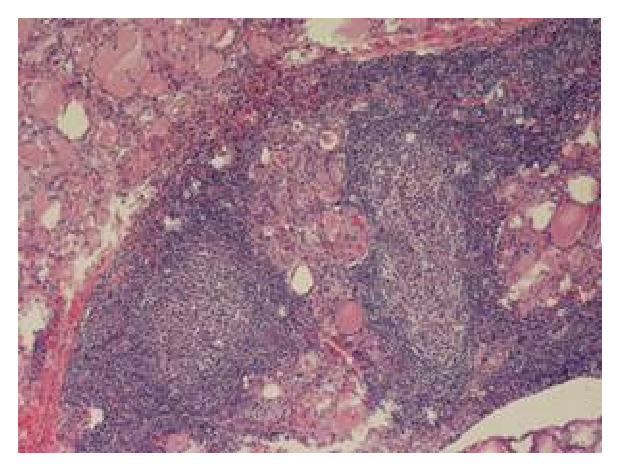

開卷有益 ／
醫師 ／ 醫學（二）（包括微生物免疫學、寄生蟲學、藥理學、病理學、公共衛生學等科目知識及其臨床之應用） ／ 108 年第 1 次108 年第 1 次醫師醫學（二）（包括微生物免疫學、寄生蟲學、藥理學、病理學、公共衛生學等科目知識及其臨床之應用）試題與答案
這一頁是民國 108 年第 1 次醫師醫學（二）（包括微生物免疫學、寄生蟲學、藥理學、病理學、公共衛生學等科目知識及其臨床之應用）的整份歷屆試題，共 100 題，題目與標準答案出自考選部「國家考試試題及測驗式試題答案」開放資料，其中 100 題附有詳解。以下逐題列出題幹、選項與答案；要計時作答或記錄成績，請用線上練習。
考選部原始場次代碼：108030
線上作答這一科 →
全部 100 題
第 1 題
肺炎鏈球菌（Streptococcus pneumoniae）對青黴素（penicillin）產⽣抗性之原因，主要為下列何者？
（A） 產⽣青黴素分解酶（penicillinase）（B） 青黴素結合蛋⽩質（penicillin-binding protein）改變（C） 阻擋青黴素進入菌體（D） 細胞壁結構改變答案：（B）
詳解與考點 正解：肺炎鏈球菌對 penicillin 的抗性機轉。肺炎鏈球菌主要藉由青黴素結合蛋白質（penicillin-binding proteins, PBPs）結構改變，降低 β-內醯胺類藥物與靶點的親和力，使細胞壁轉肽反應不易被抑制；此機轉可造成 penicillin 感受性下降，故選 B。
A：產生 penicillinase 是某些細菌分解 β-內醯胺環的抗藥機轉，但不是肺炎鏈球菌產生 penicillin 抗性的主要機轉。它看似合理，因為 β-內醯胺酶確能使 penicillin 失活；然而本菌的關鍵是靶點 PBP 改變。
C：阻擋藥物進入菌體較常用於革蘭氏陰性菌改變外膜孔蛋白或通透性；肺炎鏈球菌為革蘭氏陽性菌，並非本題所問的主要抗性原因。
D：細胞壁結構本身不是 penicillin 的特異性結合靶點；抗性重點在參與細胞壁合成的 PBP 變異，而非泛稱細胞壁結構改變。
本題考點：β-內醯胺類抗藥性（beta-lactam resistance）可由 β-內醯胺酶或靶點改變造成；肺炎鏈球菌的典型機轉是 PBP 親和力下降；PBP 是 β-內醯胺類抑制細胞壁轉肽作用的靶點。
第 2 題
對受到禽型分枝桿菌群（Mycobacterium avium Complex, MAC）感染的病患，建議使⽤下列那⼀種藥物合併⼄胺丁醇（ethambutol）及利福布丁（rifabutin）進⾏治療？
（A） 阿奇黴素（azithromycin）（B） 硝基甲嘧唑⼄醇（metronidazole）（C） 克拉維酸（clavulanic acid）（D） 棘⽩菌素（echinocandin）答案：（A）
詳解與考點 正解：禽型分枝桿菌群（Mycobacterium avium complex, MAC）的合併治療；macrolide 是療程核心，常與 ethambutol 及 rifamycin 類藥物合用。azithromycin 可抑制細菌 50S 核糖體，與 ethambutol、rifabutin 併用以治療 MAC 感染，故選 A。
B：metronidazole 主要對厭氧菌與部分原蟲有效，需在低氧環境還原後產生細胞毒性代謝物，並非 MAC 標準合併療法的核心藥物。
C：clavulanic acid 是 β-內醯胺酶抑制劑，通常與特定 β-內醯胺類併用以保護抗生素；它本身不能取代 MAC 療程中的 macrolide。
D：echinocandin 抑制真菌 β-1,3-D-glucan 細胞壁合成，用於侵襲性念珠菌感染等真菌疾病；分枝桿菌不是其治療標的。
本題考點：禽型分枝桿菌群（Mycobacterium avium complex, MAC）治療採多重藥物合併；macrolides 如 azithromycin 是重要藥物；ethambutol 與 rifamycin 類用以降低抗藥性並增進療效。
第 3 題
有關細菌抗藥性之敘述，下列何者錯誤？
（A） 廣泛抗藥性結核桿菌（XDR-TB）比多重抗藥性結核桿菌（MDR-TB）抗更多種藥物（B） 厭氧菌通常對胺基糖苷類（aminoglycosides）藥物具感受性（C） 具新德⾥⾦屬β-內酰胺酶（NDM）之細菌，對⼤多β-內酰胺（β-lactams）有抗藥性（D） 細菌青黴素結合蛋⽩質（penicillin-binding protein）之改變會導致對青黴素（penicillin）產⽣抗性答案：（B）
詳解與考點 正解：題目問錯誤敘述，關鍵在胺基糖苷類進入細菌需要依賴氧氣的主動運輸。厭氧菌缺乏這個氧依賴運輸步驟，通常對 aminoglycosides 具有內在抗藥性，不能說具感受性，故錯誤的是 B。
A：XDR-TB 的抗藥範圍較 MDR-TB 更廣，代表治療選擇更受限；敘述正確，因此不是本題答案。
C：NDM 是可水解多種 β-內醯胺類的 metallo-β-lactamase，使帶有此酶的細菌對多數 β-lactams 抗藥；敘述正確。
D：PBP 改變會降低 penicillin 與靶點結合，因而造成抗藥性；此為重要 β-內醯胺類抗藥機轉，敘述正確。
本題考點：胺基糖苷類（aminoglycosides）需氧依賴運輸才能進入細菌；厭氧菌對 aminoglycosides 常具內在抗藥性；抗藥性可來自藥物分解酶或靶點 PBP 改變。
第 4 題
關於細菌致病島（pathogenicity island）之敘述，下列何者錯誤？
（A） 可位於細菌的染⾊體（chromosome）或質體（plasmid）中（B） 不存在於轉位⼦（transposon）之中（C） 可被單⼀因⼦活化，例如：溫度或pH值的改變（D） 由多數基因所組成，可製造多種致病因⼦（virulence factors）答案：（B）
詳解與考點 正解：題目問錯誤敘述；致病島（pathogenicity island）是水平基因轉移獲得、聚集多個毒力基因的 DNA 區段，常與可移動遺傳元件相關。它可整合在染色體，也可見於質體或與轉位元件相關，不能斷言不存在於 transposon 之中，故選 B。
A：致病島可位於細菌染色體，亦可存在於質體等可移動遺傳背景；敘述正確，故不是答案。
C：致病島上的毒力基因可受環境訊號調控，例如溫度或 pH 改變觸發表現；這有助病原體在宿主內適時啟動毒力，敘述正確。
D：致病島通常含多個基因，能編碼黏附、分泌系統、毒素等多種毒力因子；這正是其作為毒力基因群集的特徵。
本題考點：致病島（pathogenicity island）是攜帶多重毒力基因的基因體區段；水平基因轉移（horizontal gene transfer）可讓病原菌快速取得毒力；毒力基因常受宿主環境訊號調控。
第 5 題
關於單核細胞增多性李斯特菌（Listeria monocytogenes）的敘述，下列何者錯誤？
（A） 是具運動性（motile）的⾰蘭⽒陽性菌（B） 可在細胞質內複製，且利⽤肌動蛋⽩（actin）移動⾄鄰近細胞（C） 主要感染⽅式為吃進受此菌汙染的食物（D） 此菌能形成內芽胞（endospores）在低溫存活答案：（D）
詳解與考點 正解：題目問錯誤敘述；Listeria monocytogenes 雖能耐冷並在低溫食品中生長，但不形成內芽胞（endospores）。其低溫存活來自耐冷生理特性，而非產芽胞，故選 D。
A：Listeria 是具運動性的革蘭氏陽性短桿菌，常以 tumbling motility 為特徵；敘述正確。
B：Listeria 逃離吞噬泡後可在宿主細胞質內複製，並藉由 actin 聚合形成尾部、移動至鄰近細胞；敘述正確。
C：人類多因食入受污染食物而感染 Listeria；食源性傳播正是其重要流行病學特徵。
本題考點：單核細胞增多性李斯特菌（Listeria monocytogenes）是可在細胞內存活的食源性革蘭氏陽性菌；actin-based motility 促成細胞間擴散；耐冷不等於能形成內芽胞（endospore）。
第 6 題
對於細菌莢膜（capsule）之敘述，下列何者正確？
（A） 主要成分為胜肽聚醣（peptidoglycan）（B） 所有細菌皆有多醣類莢膜（C） 導致⾰蘭⽒染⾊（Gram stain）反應的主要原因（D） 能幫助細菌抵抗吞噬作⽤（phagocytosis）答案：（D）
詳解與考點 正解：細菌莢膜的主要致病功能。莢膜能遮蔽細菌表面、降低補體調理作用與吞噬細胞辨識，因此能幫助細菌抵抗吞噬作用（phagocytosis），是重要毒力因子，故選 D。
A：胜肽聚醣是細菌細胞壁的主要結構成分，不是莢膜的主要成分；多數莢膜以多醣為主，少數例外為多胜肽。
B：不是所有細菌都有莢膜，且即使有莢膜也未必皆為多醣組成；把莢膜視為所有細菌共同構造過度概括。
C：革蘭氏染色反應主要取決於細胞壁的胜肽聚醣層與外膜結構差異，不是由莢膜決定。它看似與細菌外層構造相關，但判讀 Gram stain 的核心是細胞壁。
本題考點：細菌莢膜（capsule）常為多醣性外層構造；抗吞噬作用（antiphagocytic effect）是其關鍵毒力功能；革蘭氏染色（Gram stain）主要反映細胞壁結構差異。
第 7 題
對於⾁毒桿菌（Clostridium botulinum）的敘述，下列何者錯誤？
（A） ⾁毒素（Botulinum toxin）主要使細胞內的Rho-GTPase失去活性（B） 食入受此菌汙染的罐頭食品會造成⾁毒症（C） 嬰兒食入受到此菌芽胞污染的食物會造成⾁毒症（D） ⾁毒素可做為⽣化武器，造成吸入性⾁毒症（inhalation botulism）答案：（A）
詳解與考點 正解：題目問錯誤敘述；肉毒毒素（botulinum toxin）在周邊膽鹼性神經末梢切割 SNARE 蛋白，阻斷乙醯膽鹼囊泡釋放，造成下行性弛緩性麻痺，並非主要使 Rho-GTPase 失活，故選 A。Rho-GTPase 失活是其他細菌毒素的典型作用，容易與肉毒毒素的囊泡融合機轉混淆。
B：食入含預形成肉毒毒素的受污染罐頭食品可造成食源性肉毒症；敘述正確。
C：嬰兒可食入肉毒桿菌芽胞，芽胞在腸道定殖後產生毒素而引起嬰兒肉毒症；敘述正確。
D：肉毒毒素若以氣膠吸入可造成吸入性肉毒症，因其強效神經毒性而具有生物武器風險；敘述正確。
本題考點：肉毒毒素（botulinum toxin）切割 SNARE proteins 並抑制乙醯膽鹼釋放；肉毒症（botulism）可為食源性、嬰兒型或吸入型；神經肌肉接頭阻斷造成弛緩性麻痺。
第 8 題
關於韋爾病（Weil disease）的敘述，下列何者錯誤？
（A） 其致病菌屬螺旋體（spirochete）（B） 包括黃疸、腎衰竭、廣泛⾎管炎、⼼肌炎等臨床症狀（C） 多數感染與從事⽔中活動或接觸動物有關（D） 常由患者糞便中分離到致病菌答案：（D）
詳解與考點 正解：題目問錯誤敘述；韋爾病（Weil disease）是重症鉤端螺旋體病，病原 Leptospira 常經受感染動物尿液污染的水或土壤傳播。診斷檢體可依病程自血液、腦脊髓液或尿液尋找病原，並非典型由患者糞便分離，故選 D。
A：Leptospira 屬螺旋體（spirochete），敘述正確。
B：嚴重鉤端螺旋體病可出現黃疸、腎損傷與出血或血管炎相關表現，也可能累及心肌；敘述符合韋爾病的重症臨床圖像。
C：水上活動、接觸受感染動物或其尿液污染的環境，都是鉤端螺旋體感染的重要暴露史；敘述正確。
本題考點：鉤端螺旋體病（leptospirosis）由 Leptospira 引起；韋爾病（Weil disease）是可合併黃疸與腎損傷的重症型；傳播與動物尿液及污染水體密切相關。
第 9 題
有關細菌23S rRNA甲基化（methylation）會導致對下列那種藥物產⽣抗性？
（A） 慶⼤黴素（Gentamicin）（B） 磺胺甲基異唑（Sulfamethoxazole）（C） 四環黴素（Tetracycline）（D） 克林黴素（Clindamycin）答案：（D）
詳解與考點 正解：23S rRNA 甲基化；23S rRNA 位於 50S 核糖體次單元，甲基化可改變 macrolide-lincosamide-streptogramin B 類藥物的結合位點。clindamycin 屬 lincosamide，故 23S rRNA methylation 可造成其抗藥性，選 D。
A：gentamicin 是 aminoglycoside，主要結合 30S 次單元；23S rRNA 的 50S 位點改變不能解釋其典型抗藥性。
B：sulfamethoxazole 抑制葉酸代謝中的 dihydropteroate synthase，作用標的不是核糖體 23S rRNA。
C：tetracycline 主要結合 30S 次單元，常見抗性包括外排幫浦或核糖體保護蛋白，並非本題的 23S rRNA 甲基化機轉。
本題考點：23S rRNA（23S ribosomal RNA）屬 50S 核糖體次單元；MLS_B 抗藥性（macrolide-lincosamide-streptogramin B resistance）可由 rRNA methylation 造成；clindamycin 是 lincosamide 類抗生素。
第 10 題
下列那⼀種病毒有兩條單股RNA基因體，其中⼀條為雙義（ambisense）RNA？
（A） 拉薩病毒（Lassa virus）（B） 登⾰病毒（Dengue virus）（C） 中東呼吸症候群冠狀病毒（MERS-CoV）（D） 克⾥米亞-剛果出⾎熱病毒（Crimean-Congo hemorrhagic fever virus）答案：（A）
詳解與考點 正解：「兩條單股 RNA」且其中有 ambisense RNA。拉薩病毒（Lassa virus）屬 Arenaviridae，基因體由兩個 RNA 節段構成，採 ambisense 編碼策略，因此符合題述，故選 A。
B：Dengue virus 屬 Flaviviridae，為單一條正股 RNA 基因體，不是雙節段 ambisense RNA 病毒。
C：MERS-CoV 屬冠狀病毒，為單一條正股 RNA 基因體；雖然其基因體大，仍不符合兩條 RNA 與 ambisense 的組合。
D：Crimean-Congo hemorrhagic fever virus 的基因體有三個負股 RNA 節段，不是題目所述的兩節段 ambisense 配置。它看似也有分節 RNA，卻因節段數與編碼策略不符而錯。
本題考點：Arenaviridae 的基因體為雙節段 RNA；ambisense RNA 同一節段可含相反方向的編碼資訊；病毒分類可由 RNA 正負股、節段數及編碼策略鑑別。
第 11 題
關於EB 病毒的敘述，下列何者正確？
（A） 受EB病毒感染的成⼈，通常會出現帶狀疱疹（B） 在愛滋病⼈體內，EB病毒主要感染T細胞，造成T細胞的過度增⽣（C） 在⿐咽癌病⼈⾎液中，會偵測到抗EB病毒蛋⽩質的抗體⼒價上升（D） EB病毒感染B細胞之後，會進入潛伏狀態，完全不表現任何病毒RNA或蛋⽩質，以躲避免疫系統攻擊答案：（C）
詳解與考點 正解：EB 病毒與鼻咽癌的關聯。EB 病毒（Epstein-Barr virus, EBV）感染與鼻咽癌密切相關，患者血液可檢出針對 EBV 抗原的抗體反應升高，故 C 正確。
A：帶狀疱疹是水痘帶狀疱疹病毒（varicella-zoster virus）再活化所致，不是成人 EBV 感染的典型表現；EBV 較常造成傳染性單核球增多症。
B：EBV 主要感染 B 細胞並可驅動 B 細胞增生；在免疫抑制狀態可與 B 細胞淋巴增生性疾病相關，不是主要感染 T 細胞。
D：EBV 在 B 細胞可建立潛伏感染，但並非完全不表現任何病毒 RNA 或蛋白質；潛伏期仍可有受調控的潛伏基因表現，因此「完全不表現」過度絕對。
本題考點：EB 病毒（Epstein-Barr virus, EBV）具 B-cell tropism 並可建立潛伏感染；EBV 與鼻咽癌（nasopharyngeal carcinoma）相關；抗 EBV 抗體可作為相關疾病的血清學線索。
第 12 題
有關傳染性蛋⽩質（Prion）的敘述，下列何者正確？
（A） 具有抗原性（B） 可被福⾺林及紫外線去除活性（C） 無法有效刺激宿主產⽣⼲擾素（interferon）（D） 會造成肺泡細胞堅實化病變答案：（C）
詳解與考點 正解：prion 不含核酸、由宿主正常蛋白錯誤摺疊形成的特性。它不易被免疫系統辨識為外來抗原，也不會有效誘發干擾素（interferon）反應，因此 C 正確。
A：prion 與宿主正常 prion protein 同源，通常不具足以引發特異性免疫反應的抗原性；敘述錯誤。
B：prion 對許多常規去污方式具有高度抗性，不能以 formalin 或紫外線處理就可靠地去除活性；敘述錯誤。
D：prion 病主要造成中樞神經系統海綿狀病變與神經退化，不會造成肺泡細胞堅實化；後者是肺部病理概念，與 prion 疾病不符。
本題考點：傳染性蛋白質（prion）是錯誤摺疊蛋白質造成的感染性病原；干擾素反應（interferon response）通常由病毒核酸等訊號誘發；prion disease 的典型病理為海綿狀腦病（spongiform encephalopathy）。
第 13 題
下列何種流感病毒蛋⽩質是屬於質⼦通道（proton channel），與病毒釋放到細胞質有關？
（A） 基質蛋⽩質（matrix protein, M1）（B） 膜蛋⽩質（membrane protein, M2）（C） 核殼體蛋⽩質（nucleocapsid protein, NP）（D） RNA聚合酶（polymerase, PA）答案：（B）
詳解與考點 正解：流感病毒脫殼時所需的質子通道。流感 A 病毒的 M2 膜蛋白（membrane protein, M2）形成 proton channel，使病毒內部酸化，促使病毒核糖核蛋白（vRNP）與 M1 基質蛋白解離，並在膜融合後釋放至細胞質，故選 B。
A：M1 是基質蛋白質，位於病毒包膜與核殼體之間，主要提供結構支撐並參與組裝，不是質子通道。
C：NP 是核殼體蛋白質，結合並包裹病毒 RNA，功能是形成核糖核蛋白複合體，不負責離子通道。
D：PA 是流感病毒 RNA 聚合酶複合體的成員，參與病毒 RNA 轉錄與複製；它不是膜上的 proton channel。
本題考點：流感病毒 M2 蛋白（M2 proton channel）負責酸化與脫殼；M1 matrix protein 與 vRNP 解離；NP nucleocapsid protein 結合病毒 RNA。
第 14 題
對於痘科病毒（Poxvirus）的敘述，下列何者正確？
（A） 天花的撲滅，是因為全⾯接種猴痘科（monkeypox）病毒的死毒疫苗（B） 天花的撲滅，是因為全⾯接種天花病毒（variola virus）的減毒疫苗（C） 猴痘科病毒對動物的感染⽬前仍然流傳於非洲，但不會感染⼈類（D） 痘科病毒感染細胞後的複製過程在細胞質內進⾏，不需要宿主的DNA複製系統協助答案：（D）
詳解與考點 正解：痘科病毒（Poxvirus）具有獨立於宿主細胞核的複製能力。痘科病毒在細胞質內複製，攜帶進行轉錄與 DNA 複製所需的酵素，因此不需仰賴宿主的 DNA 複製系統，故選 D。
A：天花根除使用的是 vaccinia virus 活疫苗，不是 monkeypox virus 的死毒疫苗；兩者同屬 orthopoxvirus 容易造成名稱上的誘答。
B：天花根除疫苗不是以 variola virus 製成的減毒疫苗，而是 vaccinia virus 疫苗；因此病原與疫苗病毒不能混為一談。
C：monkeypox virus 仍可在動物宿主中循環，也能感染人類並造成疾病；「不會感染人類」錯誤。
本題考點：痘科病毒（Poxvirus）是可在細胞質複製的 DNA 病毒；vaccinia virus 用於天花疫苗；orthopoxvirus 可有人畜共通感染的成員。
第 15 題
關於嬰兒玫瑰疹（roseola）的敘述，下列何者錯誤？
（A） 可由⼈類疱疹第六型病毒（human herpesvirus 6）感染所造成（B） 被感染的成⼈有可能產⽣單核球增多症（mononucleosis）（C） 被感染的幼兒通常不會發燒（D） 病⼈體內的病毒會在Ｔ細胞內造成潛伏性感染（latent infection）答案：（C）
詳解與考點 正解：題目問錯誤敘述，關鍵是嬰兒玫瑰疹的典型病程：幼兒先突發高燒，退燒後才出現玫瑰色皮疹。因此「通常不會發燒」與典型臨床表現相反，故選 C。
A：嬰兒玫瑰疹常由 human herpesvirus 6（HHV-6）引起；敘述正確。
B：HHV-6 初次感染在成人也可能造成類傳染性單核球增多症的臨床表現；敘述正確。
D：HHV-6 可在 T 細胞中建立潛伏感染，符合 herpesvirus 的潛伏特性；敘述正確。
本題考點：嬰兒玫瑰疹（roseola）常由 human herpesvirus 6 引起；典型病程為高燒後退燒出疹（fever then rash）；herpesviruses 可建立潛伏感染（latent infection）。
第 16 題
有關⾺爾尼菲青黴菌（Talaromyces marneffer; formerly Penicillium memeffei）之敘述，下列何者正確？
（A） 37℃呈絲狀菌（hyphae）形態（B） 具關節孢⼦（arthroconidia）（C） 不會呈現類酵⺟菌（yeast-like）型態（D） 主要感染途徑為呼吸道（respiratory tract）本題送分，無標準答案
詳解與考點 本題官方公告送分。
第 17 題
培養莢膜組織胞漿菌（Histoplasma capsulatum）時，為防⽌其他汙染真菌之⼲擾，通常於培養基中加入下列何者？
（A） 環絲胺酸（Cycloserine）（B） 放線菌酮（Cycloheximide）（C） 氯法⿑明（Clofazimine）（D） 奎奴普丁（Quinupristin）答案：（B）
詳解與考點 正解：培養 Histoplasma capsulatum 時要抑制伴隨生長的污染真菌。cycloheximide 可抑制許多腐生性真菌的生長，常加入選擇性真菌培養基以減少污染干擾，故選 B。
A：cycloserine 是作用於細菌細胞壁合成的抗菌藥，並非用來選擇性抑制污染真菌。
C：clofazimine 是用於分枝桿菌疾病的藥物，與真菌培養基排除雜菌的用途無關。
D：quinupristin 是 streptogramin 類抗菌藥，針對特定革蘭氏陽性菌，不能作為培養 Histoplasma 時抑制污染真菌的選擇性添加物。
本題考點：放線菌酮（cycloheximide）可抑制多種污染真菌；選擇性培養基（selective medium）用添加物降低非目標微生物干擾；莢膜組織胞漿菌（Histoplasma capsulatum）是雙相性真菌（dimorphic fungus）。
第 18 題
巨噬細胞（macrophage）和嗜中性球（neutrophil）是體內最主要的吞噬細胞，它們都具有吞噬（phagocytosis）並殺死病原的能⼒，有關這兩群細胞的敘述何者錯誤？
（A） 當嗜中性球被細菌活化後，會進⾏⼀種特殊的細胞死亡的過程，把核內的染⾊質（chromatin）釋放到細胞外的空間形成neutrophil extracellular traps（NETs），有效的抓住微⽣物（B） 這兩群細胞在受到細菌刺激後都會進⾏所謂的呼吸爆發（respiratory burst）的現象，這是因為胞內酵素的作⽤，導致超氧離⼦（superoxide）的⽣成與⼆氧化碳⼤量釋出，藉以殺死細菌（C） 巨噬細胞在各個器官及組織都存在，比如在肝臟的庫⽒細胞（Kupffer cell）及神經組織中的⼩神經膠質細胞（microglia）等都是特化的巨噬細胞（D） 如果NADPH氧化酶（oxidase）的基因發⽣突變⽽失去功能，會導致這兩群主要的吞噬細胞不能有效地殺死病原，結果造成慢性⾁芽腫病（chronic granulomatous disease, CGD）答案：（B）
詳解與考點 正解：題目問錯誤敘述；吞噬細胞的呼吸爆發（respiratory burst）是 NADPH oxidase 產生 superoxide 等活性氧物種來殺菌，並非胞內酵素使二氧化碳大量釋出。選項把氧化爆發的產物誤寫為二氧化碳，故 B 錯誤。
A：嗜中性球受活化後可釋出 chromatin 與顆粒蛋白形成 neutrophil extracellular traps（NETs），捕捉微生物；敘述正確。
C：Kupffer cells 與 microglia 分別是肝臟及中樞神經系統的組織駐留巨噬細胞；敘述正確。
D：NADPH oxidase 功能缺失使吞噬細胞無法有效進行氧化爆發，導致 chronic granulomatous disease（CGD）；敘述正確。
本題考點：呼吸爆發（respiratory burst）由 NADPH oxidase 啟動並產生活性氧物種（reactive oxygen species）；NETs 是嗜中性球的胞外捕捉機制；慢性肉芽腫病（chronic granulomatous disease, CGD）與 NADPH oxidase 缺陷相關。
第 19 題
⼤部分⼈體內成熟T細胞上之TCR為α-chain及β-chain所組成，故稱為αβ T cells。當比對TCR α-chain及β-chain的DNA序列時，發現β-chain比α-chain多出了下列何種基因片段？
（A） V（B） D（C） J（D） C答案：（B）
詳解與考點 正解：TCR α 與 β 鏈的 V(D)J 重組片段差異。TCR α 鏈由 V、J、C 片段組成；β 鏈則由 V、D、J、C 片段組成，故 β-chain 比 α-chain 多出 D（diversity）片段，選 B。
A：V（variable）片段同時存在於 α-chain 與 β-chain，用來提供抗原辨識區的多樣性，不是 β-chain 特有片段。
C：J（joining）片段也同時參與 α-chain 與 β-chain 的重組，因此不是兩者差異。
D：C（constant）片段在兩條鏈皆存在，負責較固定的結構部分，並非 β-chain 額外具有。
本題考點：T-cell receptor（TCR）基因重組為 V(D)J recombination；TCR α-chain 使用 VJ 組合；TCR β-chain 使用 VDJ 組合，D 代表 diversity segment。
第 20 題
成熟的淋巴球在發育過程中會利⽤各種機制來達成⾃我耐受性（self-tolerance），下列何者和達成⾃我耐受性有直接的相關性？①AIRE基因 ②CTLA-4基因 ③Fas基因 ④正向選擇（positive selection） ⑤負向選擇（negative selection） ⑥regulatory T細胞形成
（A） ①②③④⑥（B） ①②③⑤⑥（C） 僅②③⑤⑥（D） 僅①②③⑤答案：（B）
詳解與考點 正解：自我耐受性（self-tolerance）涵蓋中樞與周邊機制。①AIRE 促進胸腺表現周邊組織抗原，⑤negative selection 刪除強烈自體反應 T 細胞，⑥regulatory T cells 抑制自體反應；②CTLA-4 提供抑制性共刺激訊號，③Fas 參與活化淋巴球的凋亡，皆與建立或維持耐受性直接相關。④positive selection 是保留能辨識自身 MHC 的 T 細胞，不是排除自體反應性的耐受機制，故正確組合為①②③⑤⑥，選 B。
A：此組合納入④positive selection，卻漏掉⑤negative selection；前者是 MHC restriction 的篩選，後者才直接刪除高親和力自體反應 T 細胞，因此錯誤。
C：②③⑤⑥都與耐受性相關，但漏掉①AIRE；AIRE 缺陷會使胸腺負向選擇不足，故此組合不完整。
D：①②③⑤都正確，但漏掉⑥regulatory T cells；Treg 對周邊耐受性至關重要，因此此組合不完整。
本題考點：中樞耐受性（central tolerance）包括 AIRE 與負向選擇（negative selection）；周邊耐受性（peripheral tolerance）可由 CTLA-4、Fas 及 regulatory T cells 維持；正向選擇（positive selection）主要建立自身 MHC 限制性。
第 21 題
下列何種細胞素，並非毒殺性CD8 T細胞（cytotoxic CD8 T cells）所分泌來執⾏細胞毒殺功能？
（A） TNF-α（B） TGF-β（C） LT-α（D） IFN-γ答案：（B）
詳解與考點 正解：毒殺性 CD8 T 細胞執行細胞毒殺時會釋放的細胞素。TGF-β主要是調節性、抑制性的細胞素，可抑制免疫反應，並非 CD8 T 細胞用來執行標的細胞毒殺的代表性細胞素，故選 B。CD8 T 細胞的直接殺傷核心是 perforin 與 granzymes，並可分泌促進發炎與殺傷效應的細胞素。
A：TNF-α可由活化的 CD8 T 細胞產生，能促進發炎反應並參與標的細胞凋亡相關的殺傷效應，故非本題答案。
C：LT-α又稱 lymphotoxin-α，屬 TNF 家族，可參與細胞媒介性免疫與細胞毒性反應，故不是題目所問的「並非」者。
D：IFN-γ是活化 CD8 T 細胞常分泌的細胞素，可活化巨噬細胞、提高抗原呈現並增強細胞免疫；它看似偏向輔助性反應，但確為毒殺性 T 細胞的效應產物，故非答案。
本題考點：毒殺性 T 細胞（cytotoxic T lymphocyte, CTL）以 perforin、granzymes 直接誘導凋亡；IFN-γ、TNF-α與 LT-α參與細胞免疫效應；轉化生長因子 β（transforming growth factor-β, TGF-β）以免疫調節與抑制為主。
第 22 題
胸腺依賴性（thymus-dependent）抗原活化B細胞需要輔助型T細胞的參與，⽽且這兩種細胞所辨識的抗原是存在⼀種相關性辨識（linked recognition）的關係，有關相關性辨識的敘述，何者錯誤？
（A） 如果⼀個B細胞的抗原接受器是辨識⼀種病毒的表⾯蛋⽩，⽽輔助型T細胞的抗原接受器是辨識此病毒內部的核⼼蛋⽩，這個輔助型T細胞是無法協助前述B細胞的活化（B） 相關性辨識可以確保⾃我耐受性（self-tolerance）的產⽣，因為對⾃體有反應的（self-reactive）T細胞必須碰到對⾃體有反應的B細胞才能引起⾃體抗體（autoantibody）的產⽣，⽽這種機率相當低（C） 我們可以利⽤相關性辨識的概念來設計疫苗幫助嬰兒產⽣有效的抗體，去對付具有莢膜構造的病菌，比如流感嗜⾎桿菌（Haemophilus influenzae）（D） 很多⼈對盤尼⻄林（penicillin）過敏的原因是因為盤尼⻄林注射到體內會和⾃體的蛋⽩形成聚合物，此聚合物會誘發TH2細胞的⽣成，再藉著相關性辨識去活化B細胞產⽣IgE引起過敏反應答案：（A）
詳解與考點 正解：related recognition 的「相關」並非要求 B 細胞與輔助型 T 細胞辨識同一個表位，而是兩者辨識同一個抗原複合物中的不同部分。辨識病毒表面蛋白的 B 細胞可內吞整個病毒、處理後以 MHC class II 呈現內部核心蛋白胜肽，因此辨識核心蛋白的輔助型 T 細胞仍可提供協助；（A）說無法協助是錯誤敘述，故選 A。
B：自體反應性 B 細胞若要獲得 T 細胞協助，仍需有可辨識同一自體抗原複合物的自體反應性輔助型 T 細胞；中樞與周邊耐受性降低此配對機會，故敘述符合相關性辨識的保護意義。
C：莢膜多醣屬 T 細胞非依賴性抗原，幼兒反應較弱；把多醣與蛋白載體結合後，B 細胞可由載體蛋白取得 T 細胞協助，正是結合型疫苗（conjugate vaccine）的原理，故正確。
D：penicillin 可作為半抗原（hapten）與自體蛋白結合；B 細胞辨識該複合物後，可呈現載體蛋白相關胜肽給 TH2 細胞並促進 IgE 反應，符合相關性辨識，故非答案。
本題考點：相關性辨識（linked recognition）要求 B 細胞與輔助型 T 細胞辨識同一抗原複合物的不同表位；MHC class II 抗原呈現（antigen presentation）；結合型疫苗（conjugate vaccine）將多醣抗原轉為可獲 T 細胞協助的反應。
第 23 題
在黏膜產⽣的分泌型IgA（secretary IgA）⼤部分為：
（A） 單體（monomer）（B） ⼆聚體（dimer）（C） 三聚體（trimer）（D） 五聚體（pentamer）答案：（B）
詳解與考點 正解：「黏膜」與「分泌型」IgA。漿細胞在黏膜固有層產生的 IgA多以 J chain 連接成二聚體，經多聚免疫球蛋白受體轉運穿越上皮後，帶有 secretory component 而成為分泌型 IgA，故選 B。這種構造有利於抵抗分泌物中的蛋白酶並在黏膜表面中和病原。
A：單體 IgA主要見於血清；它看似也是 IgA的基本結構單位，但題目限定的是黏膜分泌型 IgA，故不符。
C：三聚體不是人類分泌型 IgA的典型主要形式，故錯。
D：五聚體是 IgM的典型分泌型態，並非分泌型 IgA的主要構造，故錯。
本題考點：分泌型 IgA（secretory IgA）主要為含 J chain 的二聚體；多聚免疫球蛋白受體（polymeric immunoglobulin receptor）負責跨上皮轉運；secretory component 有助 IgA在黏膜分泌物中維持穩定。
第 24 題
⾼免疫球蛋⽩M症候群（hyper-IgM syndrome）是⼀種罕⾒的先天性免疫不全疾病，患者⾎清中除了IgM之外其他類型，例如IgG和IgA數值明顯低於平均值，造成病患容易感染。B細胞中特定基因的缺陷會造成B細胞無法產⽣類型轉換（class switching），但是T細胞的基因突變也可以導致相同的疾病。以下那個蛋⽩質缺陷會造成T細胞無法幫助B細胞類型轉換？
（A） AID（activation-induced cytidine deaminase）（B） CD40（C） CD40 ligand（D） NEMO（NF-κB essential modulator， 或稱IKK γ）答案：（C）
詳解與考點 正解：「T 細胞」缺陷造成 B 細胞無法類型轉換。輔助型 T 細胞表面的 CD40 ligand 必須和 B 細胞的 CD40 結合，才能啟動生發中心反應與免疫球蛋白類別轉換；CD40 ligand 缺陷使 T 細胞無法提供此必要訊號，導致高 IgM症候群，故選 C。
A：AID是 B 細胞內進行類別轉換與體細胞高突變所需的酵素；其缺陷可造成高 IgM表現型，但不是 T 細胞無法協助 B 細胞的缺陷。
B：CD40位於 B 細胞等抗原呈現細胞表面，缺陷同樣破壞 CD40–CD40 ligand 訊號；然而題目問的是 T 細胞的蛋白質缺陷，故不選。
D：NEMO參與 NF-κB訊號傳遞，缺陷可造成免疫缺陷並影響類別轉換；它看似與題意相關，但不是輔助型 T 細胞直接提供給 B 細胞的共刺激分子。
本題考點：CD40 ligand（CD40L）是輔助型 T 細胞協助 B 細胞的關鍵共刺激訊號；免疫球蛋白類別轉換（class-switch recombination）需要 CD40–CD40L與 AID；高免疫球蛋白 M症候群（hyper-IgM syndrome）表現為 IgM相對保留而 IgG、IgA降低。
第 25 題
針對可以引起氣喘等第⼀型過敏性疾病之過敏原，下列那⼀項敘述最正確？
（A） 與⼀般抗原相同，都需經抗原呈獻細胞作⽤來活化T細胞（B） 同卵雙胞胎對特定過敏原都會有相同的反應（C） 都具有蛋⽩⽔解酶（protease）的功能（D） 病⼈體內都可以檢測出對過敏原具特異性的IgE答案：（A）
詳解與考點 正解：第一型過敏原如何引發 Th2與 IgE反應。過敏原和一般蛋白抗原一樣，通常先被抗原呈現細胞攝取、處理並以 MHC class II 呈現給 CD4 T 細胞，後續在適當細胞素環境下偏向 Th2反應，故選 A。Th2再協助 B 細胞進行 IgE類別轉換，致敏後重遇過敏原才引發肥大細胞反應。
B：遺傳會影響異位性體質，但同卵雙胞胎的暴露史、微生物相與免疫調節不同，對同一過敏原不保證有相同反應，故錯。
C：部分過敏原具有 protease 活性並可破壞上皮屏障，但這不是所有過敏原共同必備的性質，故錯。
D：第一型過敏反應由特異性 IgE介導，但「都可以檢測出」過度絕對；檢測結果受致敏程度、檢體與方法影響，故不如（A）正確。
本題考點：第一型過敏反應（type I hypersensitivity）由 IgE與肥大細胞介導；抗原呈現細胞（antigen-presenting cell）以 MHC class II活化 CD4 T 細胞；Th2反應促進 B 細胞產生 IgE。
第 26 題
下列⾃體免疫疾病中，何者侵犯不⽌⼀處組織，屬於系統性疾病？
（A） ⾃體溶⾎性貧⾎（autoimmune hemolytic anemia）（B） ⾃體免疫愛迪森疾患（autoimmune Addison's disease）（C） Hashimoto's thyroiditis（D） 類風濕性關節炎（rheumatoid arthritis）答案：（D）
詳解與考點 正解：「不止一處組織」的系統性自體免疫疾病。類風濕性關節炎雖以滑膜炎為主，免疫性發炎可造成多關節病變，也可累及皮膚、眼、肺、血管等關節外器官，因此屬系統性疾病，故選 D。
A：自體溶血性貧血的主要標的是紅血球，臨床核心為血球破壞與溶血，屬器官或組織較侷限的自體免疫表現，故非答案。
B：自體免疫愛迪森疾患主要攻擊腎上腺皮質，造成腎上腺功能不足，故非典型的多系統侵犯疾病。
C：Hashimoto's thyroiditis主要針對甲狀腺抗原，導致慢性甲狀腺炎與甲狀腺功能異常，病灶侷限於甲狀腺，故非答案。
本題考點：系統性自體免疫疾病（systemic autoimmune disease）可累及多種器官；類風濕性關節炎（rheumatoid arthritis）除關節炎外可有關節外表現；器官特異性自體免疫（organ-specific autoimmunity）如 Hashimoto's thyroiditis與自體免疫愛迪森疾患。
第 27 題
下列⽤來治療癌症的抗體，何者屬於checkpoint blockade療法？
（A） Avastin（anti-VEGF antibody）（B） Pembrolizumab（anti-PD-1 antibody）（C） Rituximab（anti-CD20 antibody）（D） Trastuzumab（anti-HER2/neu antibody）答案：（B）
詳解與考點 正解：checkpoint blockade，也就是解除 T 細胞抑制性免疫檢查點的治療。Pembrolizumab為 anti-PD-1 antibody，阻斷 PD-1與其配體的抑制訊號，讓抗腫瘤 T 細胞功能得以恢復，故選 B。
A：Avastin抑制 VEGF，主要是抑制腫瘤血管新生，並非直接解除 T 細胞檢查點抑制，故錯。
C：Rituximab靶向 B 細胞表面的 CD20，用於特定 B 細胞惡性腫瘤及自體免疫疾病；它是單株抗體治療，但不是 checkpoint blockade，故錯。
D：Trastuzumab靶向 HER2/neu受體，抑制 HER2陽性腫瘤訊號；它看似也是以免疫機制協助抗癌，然而治療標的不是 PD-1或 CTLA-4等檢查點，故錯。
本題考點：免疫檢查點阻斷（immune checkpoint blockade）解除 PD-1或 CTLA-4對 T 細胞的抑制；Pembrolizumab是 anti-PD-1 antibody；抗 VEGF與抗 HER2抗體分別靶向血管新生與腫瘤生長訊號。
第 28 題
藉由抑制破骨細胞（osteoclast cell）的活化，可以改善骨質流失的藥物為何？
（A） Infliximab（anti-TNF-α）（B） Denosumab（anti-RANK-L）（C） Daclizumab（anti-IL-2R）（D） Belimumab（anti-BLyS）答案：（B）
詳解與考點 正解：抑制破骨細胞活化以減少骨質流失。RANKL與破骨細胞前驅細胞上的 RANK結合，驅動其分化與活化；Denosumab中和 RANKL，阻斷此訊號而降低骨吸收，故選 B。
A：Infliximab中和 TNF-α，主要用於 TNF-α驅動的發炎疾病；雖可間接影響發炎性骨破壞，但不是直接以 RANKL–RANK軸抑制破骨細胞活化的藥物，故錯。
C：Daclizumab靶向 IL-2 receptor，作用於 T 細胞活化路徑，與破骨細胞分化的核心 RANKL訊號無關，故錯。
D：Belimumab抑制 B lymphocyte stimulator（BLyS），以 B 細胞存活與自體抗體反應為主要標的，非治療骨質流失的直接破骨細胞抑制劑，故錯。
本題考點：RANKL–RANK訊號（RANKL-RANK signaling）促進破骨細胞（osteoclast）分化與活化；Denosumab為 anti-RANKL antibody；骨吸收（bone resorption）增加是骨質流失的重要機轉。
第 29 題
下列有關⼈體感染海獸胃線蟲（Anisakis spp.）的敘述，何者錯誤？
（A） 必須經過在2種中間宿主中發育後，才具有感染⼈之能⼒（B） 必須檢查糞便內蟲卵才能確認感染（C） 通常吃海⽔⿂⽣⿂片⽽感染（D） 感染後常引起急性腹痛答案：（B）
詳解與考點 正解：人類感染海獸胃線蟲後並非其正常終宿主。人吃入海魚或頭足類中的第三期幼蟲後，幼蟲可侵入胃腸壁造成急性腹痛，但通常無法在人體成熟、產卵，因此糞便蟲卵檢查不能作為確認感染的方式；（B）錯誤，故選 B。
A：海獸胃線蟲的生活史涉及甲殼類與魚類或頭足類等宿主，人類攝入感染性幼蟲而成偶然宿主，敘述的生活史方向正確，故非答案。
C：食用生或未熟海水魚類是常見感染途徑，生魚片暴露史正是重要線索，故正確。
D：幼蟲侵入胃腸壁可引起急性腹痛、噁心或嘔吐，故敘述正確。
本題考點：海獸胃線蟲病（anisakiasis）源自生食海魚或頭足類；人類是偶然宿主（accidental host），幼蟲通常不在人體成熟產卵；診斷可依病史、內視鏡或病理發現幼蟲。
第 30 題
有關班⽒絲蟲（Wuchereria bancrofti）的感染，下列敘述何者錯誤？
（A） 病媒蚊吸⾎時直接將微絲蟲（microfilaria）注入⼈體（B） 蟲體在淋巴管發育為成蟲（C） 只有在夜間微絲蟲（microfilaria）才會⼤量出現在末梢⾎液（D） 在乳糜尿（chyluria）中也可能發現微絲蟲（microfilaria）答案：（A）
詳解與考點 正解：班氏絲蟲由病媒蚊傳入人體的感染期。蚊吸血時傳入的是感染性第三期幼蟲（L3），不是微絲蟲；微絲蟲是成蟲在人體淋巴系統產生、再被蚊吸入的階段，所以（A）錯誤，故選 A。
B：班氏絲蟲的成蟲寄居並發育於淋巴管與淋巴結，可造成淋巴阻塞與象皮病，故正確。
C：班氏絲蟲的微絲蟲具有夜間週期性，夜間較常大量出現在周邊血，與夜間吸血蚊的活動相配合，故正確。
D：淋巴管阻塞或破裂可導致乳糜尿，尿液中可發現微絲蟲，故敘述正確。
本題考點：班氏絲蟲（Wuchereria bancrofti）的感染期為蚊傳第三期幼蟲（L3）；微絲蟲（microfilaria）由人體成蟲產生且常具夜間週期性；淋巴絲蟲病（lymphatic filariasis）可造成乳糜尿與淋巴阻塞。
第 31 題
于先⽣因嗜愛美食⽽食⽤浸酒⽑蟹（醉蟹）多年，⽇前因不明原因發燒、咳嗽、胸痛及⼤量帶⾎絲濃痰（blood-tinged sputum）⽽就醫，經醫院檢查發現痰液內有許多深褐⾊蟲卵及卡格⾥登結晶（Charcot-Leyden crystals)，胸部X光顯⽰有斑狀浸潤及結節狀囊體陰影，並有胸膜積⽔（pleural effusion）及嗜酸性⽩⾎球增多（eosinophilia）現象。依據以上敘述，于先⽣最可能感染何種寄⽣蟲？
（A） 異形吸蟲（Heterophyes heterophyes）（B） ⽇本⾎吸蟲（Schistosoma japonicum）（C） 薑片蟲（Fasciolopsis buski）（D） 衛⽒肺吸蟲（Paragonimus westermani）答案：（D）
詳解與考點 正解：食用醉蟹後出現血痰、痰中深褐色蟲卵、嗜酸性白血球增多與肺部囊狀病灶。衛氏肺吸蟲可經未熟蟹或蝲蛄傳播，成蟲寄生肺部並產卵，造成肺部浸潤、結節、胸膜積水及血痰，故選 D。
A：異形吸蟲主要因生食魚類感染，成蟲寄生於小腸，通常不造成痰中蟲卵與肺部囊狀病灶，故錯。
B：日本血吸蟲感染後病灶主要在腸道、肝臟與門脈系統，蟲卵主要由糞便排出，不能解釋本題肺吸蟲的典型呼吸道表現。
C：薑片蟲為腸道吸蟲，感染來源偏向水生植物，主要引起腸胃道症狀，與食用醉蟹後肺部病灶不符。
本題考點：衛氏肺吸蟲（Paragonimus westermani）可由生食或未熟蟹、蝲蛄感染；肺吸蟲病（paragonimiasis）常見血痰、嗜酸性白血球增多與痰中蟲卵；Charcot-Leyden crystals 提示嗜酸性白血球相關發炎。
第 32 題
下列有關⼈罹患豬囊尾幼蟲症（cysticercosis cellulosae）的敘述，何者錯誤？
（A） 食入未熟帶蟲之豬⾁，其囊蟲侵犯內臟器官致病（B） 也會在肌⾁致病（C） 病患可能發⽣癲癇（epilepsy）（D） ⾎清抗體檢查有助於診斷答案：（A）
詳解與考點 正解：豬囊尾幼蟲症與腸道豬肉絛蟲感染的感染途徑不同。食入未熟、含囊尾幼蟲的豬肉會使人在腸道內發育為成蟲，造成豬肉絛蟲症；囊尾幼蟲侵犯腦、肌肉或其他器官則是食入豬肉絛蟲蟲卵後所致，因此（A）把兩者混為一談而錯誤，故選 A。
B：囊尾幼蟲可寄生於骨骼肌，引起肌肉囊蟲病灶，故正確。
C：中樞神經囊尾幼蟲症可引起癲癇發作，是重要臨床表現，故正確。
D：血清抗體檢查可作為診斷輔助；它看似不能單獨定案，但題目只說「有助於」診斷，敘述正確。
本題考點：豬囊尾幼蟲症（cysticercosis）來自食入 Taenia solium蟲卵；食入含囊尾幼蟲豬肉造成的是腸道絛蟲病（taeniasis）；神經囊尾幼蟲症（neurocysticercosis）是癲癇的重要寄生蟲病因。
第 33 題
下列有關寄⽣蟲之敘述中，何者錯誤？
（A） 瘧疾發作（paroxysm）之過程依序為：惡寒（chill）、發燒（fever）、發汗（sweat）（B） 三⽇瘧原蟲（Plasmodium malariae）較喜侵入成熟的紅⾎球中分裂增殖（C） 卵形瘧原蟲（Plasmodium ovale）之鑑定，常視患者⾎液抹片是否有帶狀型滋養體（band formtrophozoites）（D） 在瘧疾流⾏地區，六個⽉以下的嬰兒常因為得⾃⺟體抗體的保護作⽤，甚少罹患瘧疾答案：（C）
詳解與考點 正解：不同瘧原蟲的血液抹片形態。帶狀型滋養體（band form trophozoite）是三日瘧原蟲（Plasmodium malariae）的典型形態，不是卵形瘧原蟲的鑑定特徵，因此（C）錯誤，故選 C。卵形瘧原蟲較常見卵圓、邊緣呈流蘇狀的受感染紅血球。
A：典型瘧疾發作依序可見惡寒期、發燒期與發汗期，敘述正確。
B：三日瘧原蟲偏好侵入成熟紅血球，寄生蟲血症通常較低，故正確。
D：流行區六個月以下嬰兒可受母體抗體與胎兒血紅素等因素部分保護，罹患率相對低，故敘述正確。
本題考點：瘧疾發作（malarial paroxysm）依序為 chill、fever、sweat；三日瘧原蟲（Plasmodium malariae）常見 band form trophozoite；卵形瘧原蟲（Plasmodium ovale）可見卵圓及流蘇狀紅血球邊緣。
第 34 題
下列有關阿米巴之敘述中，何者正確？
（A） 嗜碘阿米巴（Iodamoeba bütschlii）的滋養體（trophozoites）具有⼀個很⼤的肝醣泡（glycogenvacuole）（B） 哈⽒阿米巴（Entamoeba hartmanni）的滋養體（trophozoites）也會吞噬紅⾎球（C） 痢疾阿米巴（Entamoeba histolytica）感染之⾼危險群包括男同性戀者及啟智、精神教養院⽣（D） 痢疾阿米巴（Entamoeba histolytica）的囊體中的類染⾊體（chromatoid bodies）之成分是DNA答案：（C）
詳解與考點 正解：痢疾阿米巴感染的流行病學高風險族群。糞口傳播在衛生條件不佳、群居機構及特定性行為暴露情境中較易發生，因此男同性戀者及啟智、精神教養院住民屬較高風險群，故選 C。
A：嗜碘阿米巴的大型肝醣泡是其囊體的典型特徵，不是滋養體特徵，故錯。
B：吞噬紅血球是痢疾阿米巴滋養體的重要鑑別點；哈氏阿米巴為非致病性腸道阿米巴，通常不吞噬紅血球，故錯。
D：痢疾阿米巴囊體的類染色體主要由核糖核蛋白相關物質構成，並非 DNA，故錯。
本題考點：痢疾阿米巴（Entamoeba histolytica）經糞口途徑傳播並可造成侵襲性腸炎；紅血球吞噬（erythrophagocytosis）支持痢疾阿米巴診斷；嗜碘阿米巴（Iodamoeba bütschlii）的囊體可見大型 glycogen vacuole。
第 35 題
有關蠅蛆症（myiasis）之敘述，下列何者錯誤？
（A） ⼈膚蠅（Dermatobia hominis）產卵於吸⾎性蚊/蠅之腹部⽽致孵化之幼蟲鑽入宿主⽪膚傷⼝（B） 院內蠅蛆症（nosocomial myiasis）常發⽣於⻑期臥床且有開放性傷⼝病患（C） ⽿部蠅蛆症（aural myiasis）病患常有蟲體爬動感、雜⾳及惡臭分泌物（D） ⼈膚蠅（Dermatobia hominis）傳播之蠅蛆症經常發⽣於亞洲地區答案：（D）
詳解與考點 正解：人膚蠅的地理分布。Dermatobia hominis主要分布於中南美洲，並非亞洲常見傳播者，所以（D）錯誤，故選 D。
A：人膚蠅會把卵黏附於吸血昆蟲體表，該昆蟲接觸宿主時幼蟲孵化並進入皮膚，這種搭便車傳播是其特徵，故正確。
B：長期臥床、有開放性傷口且照護環境防蠅不足者，容易發生院內蠅蛆症，故正確。
C：耳部蠅蛆症的幼蟲在外耳道活動可造成爬動感、耳鳴樣雜音與惡臭分泌物，故正確。
本題考點：蠅蛆症（myiasis）是蠅類幼蟲寄生人體組織；人膚蠅（Dermatobia hominis）主要見於中南美洲；院內蠅蛆症（nosocomial myiasis）與臥床、傷口及環境防蠅不足有關。
第 36 題
關於測量尺度（measurement scale）的敘述，下列何者正確？
（A） ⾎型為序位尺度（ordinal scale）（B） 膽固醇值（mg／100 ml）為等比尺度（ratio scale）（C） 體溫（攝⽒度C）為等比尺度（ratio scale）（D） 癌症分期為等距尺度（interval scale）答案：（B）
詳解與考點 正解：各測量尺度是否有真零點，以及能否比較倍數。膽固醇濃度以 mg/100 ml表示，0代表沒有測得膽固醇，比例具有意義，因此為等比尺度（ratio scale），故選 B。
A：血型只有分類、沒有大小順序，屬名義尺度（nominal scale）而非序位尺度，故錯。
C：攝氏溫度的 0°C不是絕對無溫度，不能說 20°C是 10°C的兩倍，故屬等距尺度而非等比尺度。
D：癌症分期具有由低至高的順序，但各期差距不等，屬序位尺度而非等距尺度，故錯。
本題考點：名義尺度（nominal scale）僅供分類；序位尺度（ordinal scale）有順序但間距未必相等；等距尺度（interval scale）無真零點，而等比尺度（ratio scale）具真零點且可比較比例。
第 37 題
下⾯的傳染病中，何者是臺灣傳染病通報分級中的第⼀類（必須立即通報）？
（A） 狂⽝病（B） ⽇本腦炎（C） 瘧疾（D） 梅毒答案：（A）
詳解與考點 正解：題目所採用的臺灣傳染病通報分級中「第一類、必須立即通報」。依本題考試脈絡，狂犬病列為第一類傳染病，須立即通報，故選 A。傳染病分類與通報要求可能依主管機關公告調整；本題的分級判讀具時效性，應以當時題目所依規範理解。
B：日本腦炎雖是重要蚊媒傳染病並須依法通報，但在本題分類中不屬第一類立即通報疾病，故非答案。
C：瘧疾具有防治與境外移入監測的重要性，但本題所列分級不是第一類，故錯。
D：梅毒是重要性傳染病且須通報與防治，但本題所列分級不是第一類，故錯。
本題考點：法定傳染病通報（notifiable disease reporting）依主管機關分級決定時效；第一類傳染病（Category 1 communicable disease）要求立即通報；傳染病分類（communicable disease classification）屬規範時效敏感資訊。
第 38 題
⼀研究想比較抽菸者與非抽菸者的⾎膽固醇濃度，下列敘述何者錯誤？
（A） 檢定時犯下型⼀錯誤（type I error）的機率，即為研究者設定的顯著⽔準（B） 若顯著⽔準不變，欲增加統計檢定⼒，可以增加樣本數（C） 型⼀錯誤是抽菸者與非抽菸者的⾎膽固醇濃度沒差異，但檢定時卻誤判有差異的情形（D） 型⼀錯誤加型⼆錯誤的機率和為1答案：（D）
詳解與考點 正解：型一錯誤 α與型二錯誤 β的關係。α是在虛無假說為真時誤拒絕它的機率；β是在虛無假說為假時未能拒絕它的機率。兩者是在不同真實狀態下定義，不能相加為 1；與 β互補的是檢定力 1−β，而不是 α，因此（D）錯誤，故選 D。
A：研究者預先設定的顯著水準 α，就是檢定時容許犯型一錯誤的機率，故正確。
B：在顯著水準固定下增加樣本數通常可降低標準誤、提高檢定力，故正確。
C：真實上兩組膽固醇沒有差異卻被判為有差異，正是錯誤拒絕虛無假說的型一錯誤，故正確。
本題考點：型一錯誤（type I error, α）為真虛無假說被誤拒絕；型二錯誤（type II error, β）為假虛無假說未被拒絕；統計檢定力（statistical power）為 1−β，常隨樣本數增加而提高。
第 39 題
疾病篩檢以平⾏檢定（Simultaneous Testing）為之，對篩檢效度有何影響？
（A） 淨敏感度（Net sensitivity）增加（B） 淨特異度（Net specificity）增加（C） 淨特異度（Net specificity）減少（D） 偽陽性率（False positive rate）增加答案：（A）
詳解與考點 正解：官方答案為 A。平行檢定採任一檢查陽性即判陽性的規則，只要任一檢查抓到病人就不會漏掉，因此淨敏感度增加。惟同一規則也會使淨特異度減少、偽陽性率增加，故本題具有多解爭議。
B：平行檢定下要判定陰性必須所有檢查都陰性，淨特異度不會增加。
C：淨特異度減少是平行檢定的正確效度變化，故（C）也可成立，不能以「主要效益」排除。
D：任一檢查偽陽性即可使整體判為陽性，因此偽陽性率增加；（D）同樣可成立。
本題考點：平行檢定（parallel testing/simultaneous testing）；淨敏感度（net sensitivity）提高；淨特異度（net specificity）下降與偽陽性率上升。
第 40 題
某研究想探討吸菸與肺功能值的關係，將受試者依吸菸狀況分為五組：①本⼈不吸菸⼯作環境也無⼈吸菸②本⼈不吸菸但⼯作環境很多⼈吸菸③本⼈吸菸程度輕微④本⼈吸菸程度中等⑤本⼈吸菸程度嚴重。每組找100⼈，測量每個⼈的某肺功能指標。假如我們要檢定這五種吸菸狀況下的肺功能平均值是否不同，下列那⼀種統計分析⽅法最適當？
（A） 獨立t檢定（B） 配對t檢定（C） ⽪爾森⽒卡⽅檢定（D） 單因⼦變異數分析答案：（D）
詳解與考點 正解：比較五個彼此獨立組別的連續型肺功能平均值。自變項為五種吸菸狀況，依變項為每人一個肺功能指標；要一次檢定五組平均值是否全相同，最適合使用單因子變異數分析（one-way ANOVA），故選 D。其虛無假說是五組母體平均值相等。
A：獨立 t檢定只能比較兩個獨立組別的平均值；若對五組反覆兩兩比較會增加多重比較的型一錯誤風險，故不適合。
B：配對 t檢定要求兩筆觀測值有自然配對，例如同一人治療前後；本題各組受試者不同，沒有配對結構，故錯。
C：皮爾森氏卡方檢定主要分析類別變項的次數或比例；本題結果是連續型肺功能平均值，故不適用。
本題考點：單因子變異數分析（one-way analysis of variance, ANOVA）比較三組以上獨立樣本的平均值；虛無假說（null hypothesis）為各組母體平均數相等；獨立 t檢定（independent t-test）僅適於兩組平均數比較。
第 41 題
研究臺灣各鄉鎮市區空氣污染與癌症發⽣之關係，空氣污染資料來⾃環保署，⽽癌症發⽣資料來⾃衛⽣福利部，這些資料除了性別與年齡外無個⼈⽣活相關資料，則該研究屬何種？
（A） 個案報告（case report）（B） ⽣態學研究（ecological study）（C） 病例對照研究（case-control study）（D） 世代研究（cohort study）答案：（B）
詳解與考點 正解：暴露與疾病資料都以「鄉鎮市區」為單位彙整，且沒有個人生活型態資料；這是在群體層級比較空氣污染與癌症發生的關聯，屬生態學研究（ecological study），故選 B。此設計能迅速利用既有資料產生假說，但不能把地區層級的關聯直接推論為個人層級的因果關係。
A：個案報告（case report）是描述單一個案或少數病例的臨床表現與處置，沒有本題跨鄉鎮比較暴露與疾病率的群體資料，故不符。
C：病例對照研究（case-control study）須先依個人是否罹癌分成病例與對照，再回溯比較個人暴露史；本題只有地區彙整資料，無法依個人疾病狀態及暴露狀態配對。
D：世代研究（cohort study）通常依個人暴露狀態分組並追蹤疾病發生；本題沒有個人暴露或追蹤資料，故不是世代研究。
本題考點：生態學研究（ecological study）以群體為分析單位；生態謬誤（ecological fallacy）是把群體關聯錯推到個人的風險或因果關係；病例對照研究（case-control study）與世代研究（cohort study）皆以個人資料為核心。
第 42 題
那些空氣污染物會造成酸雨效應？①⼀氧化碳 ②臭氧 ③硫氧化物 ④氮氧化物
（A） 僅①②（B） ①②③（C） 僅③④（D） ②③④答案：（C）
詳解與考點 正解：「酸雨效應」。燃燒排出的硫氧化物與氮氧化物在大氣中可氧化並溶於水，形成硫酸與硝酸，使降水酸化；因此會造成酸雨的是③硫氧化物與④氮氧化物，故選 C。
A：此項只列①一氧化碳與②臭氧，漏掉酸雨的主要前驅物③硫氧化物與④氮氧化物。一氧化碳主要造成缺氧毒性，臭氧則是光化學煙霧的重要污染物，皆非酸雨形成的主要酸性前驅物。
B：此項雖包含③硫氧化物，卻把①一氧化碳與②臭氧納入，並遺漏④氮氧化物；一氧化碳與臭氧看似也是常見空氣污染物，但其主要環境健康問題不同於酸雨。
D：此項包含②臭氧、③硫氧化物與④氮氧化物；③、④正確，但②臭氧不是酸雨的主要前驅物，故整體不正確。
本題考點：酸雨（acid rain）的主要前驅物為硫氧化物（sulfur oxides, SOx）與氮氧化物（nitrogen oxides, NOx）；一氧化碳（carbon monoxide）與臭氧（ozone）雖為重要空氣污染物，作用機轉不同。
第 43 題
下列那⼀選項，最適⽤於描述非致癌物之風險評估？
（A） 劑量反應假設具有閾值存在（B） 使⽤斜率因⼦進⾏風險計算（C） 量化結果⼀般與10-6比較，以判定風險是否可接受（D） 不適合進⾏不確定性分析答案：（A）
詳解與考點 正解：「非致癌物」的健康風險評估。非致癌物通常採閾值（threshold）假設：低於某一暴露量時，預期不致出現不良健康效應；因此以參考劑量等健康基準比較暴露量，故選 A。
B：斜率因子（slope factor）用於估計致癌物的終生致癌風險，通常建立在低劑量線性無閾值的外推架構；非致癌物較常以危害商數評估，故不適用。
C：10^-6 常用於表達或比較致癌風險的量級；非致癌物不是以終生癌症機率表示風險，因此不以此作為主要可接受性判斷。
D：不確定性分析（uncertainty analysis）可用來呈現暴露估計、毒理資料與模型假設的不確定性，非致癌物風險評估同樣適合進行，故此敘述錯誤。
本題考點：非致癌健康風險評估（non-cancer risk assessment）通常採閾值模型（threshold model）；致癌風險評估（cancer risk assessment）常使用斜率因子（slope factor）與終生致癌風險；不確定性分析（uncertainty analysis）適用於兩者。
第 44 題
傳染登⾰熱的病媒蚊是下列何者？
（A） 熱帶家蚊、⽩腹叢蚊（B） 埃及斑蚊、⽩線斑蚊（C） ⽩腹叢蚊、⼩⿊蚊（D） 中華瘧蚊、熱帶家蚊答案：（B）
詳解與考點 正解：登革熱的病媒蚊。在臺灣傳播登革病毒的主要病媒為埃及斑蚊與白線斑蚊，兩者均屬斑蚊屬（Aedes），故選 B。
A：熱帶家蚊與白腹叢蚊皆非登革熱的主要病媒，故不符。
C：白腹叢蚊不是登革熱主要病媒，小黑蚊也不是傳播登革熱的斑蚊；此項看似皆為常見叮咬人類的蚊蟲，但病媒種類不對。
D：中華瘧蚊與熱帶家蚊不屬登革熱主要傳播蚊種；中華瘧蚊與瘧疾的傳播關聯較大，故不符。
本題考點：登革熱（dengue fever）的病媒為埃及斑蚊（Aedes aegypti）與白線斑蚊（Aedes albopictus）；病媒傳染病防治須區分斑蚊（Aedes）與瘧蚊（Anopheles）的疾病關聯。
第 45 題
某勞⼯每⽇⼯作八⼩時，假設每⼀個⼩時之前10分鐘暴露於60 ppm之甲苯，後50分鐘則未暴露，其八⼩時時量平均暴露濃度為何？
（A） 10 ppm（B） 15 ppm（C） 20 ppm（D） 60 ppm答案：（A）
詳解與考點 正解：每小時只有前10分鐘暴露於60 ppm，其餘50分鐘為0 ppm。每小時的時間加權平均濃度為（60 ppm × 10/60）＋（0 ppm × 50/60）＝10 ppm；8個小時重複相同暴露型態，8小時時量平均仍為10 ppm，故選 A。
B：15 ppm 相當於把每小時的暴露時間或濃度高估；本題實際暴露時間只占每小時的1/6，故不符。
C：20 ppm 相當於把60 ppm暴露視為每小時20分鐘，與題目的10分鐘不符。
D：60 ppm 是暴露發生時的瞬時濃度，不是將50分鐘零暴露納入後的8小時時量平均濃度。
本題考點：時量平均濃度（time-weighted average, TWA）＝各時段濃度乘以該時段時間後加總，再除以總時間；零暴露時段也必須納入平均。
第 46 題
⼯⼈⻑期暴露在有機溶劑環境中，會產⽣許多危害，⻑期暴露於苯，最可能會發⽣那種癌症？
（A） ⾎癌（B） 肝癌（C） 腎癌（D） ⽪膚癌答案：（A）
詳解與考點 正解：長期苯暴露。苯會造成骨髓毒性與造血系統異常，並增加急性骨髓性白血病等血液惡性腫瘤的風險，因此最可能發生血癌，故選 A。
B：肝臟是多種化學物質代謝器官，容易使人聯想到化學致癌；但苯最具代表性的致癌關聯是骨髓與血液腫瘤，而非肝癌。
C：苯的典型慢性職業危害不是腎癌，故不符。
D：苯的主要致癌靶器官為造血系統，皮膚癌並非其典型關聯癌症，故不符。
本題考點：苯（benzene）具骨髓毒性（myelotoxicity）與致癌性；職業性苯暴露與白血病（leukemia），尤其急性骨髓性白血病（acute myeloid leukemia），具有代表性關聯。
第 47 題
根據衛⽣福利部定義我國成⼈肥胖的BMI（Body Mass Index）切點為何？
（A） 25（B） 27（C） 29（D） 31答案：（B）
詳解與考點 正解：我國成人肥胖的BMI切點。依我國成人體重分類，BMI達27即列為肥胖，因此正確切點為27，故選 B。
A：BMI 25是過重的切點，不是成人肥胖的切點；它看似接近肥胖分類，但把過重誤當成肥胖。
C：BMI 29高於我國肥胖切點，會漏掉BMI介於27至未滿29的肥胖者，故不正確。
D：BMI 31同樣高於我國肥胖切點，無法作為本題所問的成人肥胖起始分類值。
本題考點：身體質量指數（body mass index, BMI）以體重除以身高平方計算；我國成人體重分類中，過重（overweight）自BMI 24起，肥胖（obesity）自BMI 27起。
第 48 題
下列那個模式最適合⽤來解釋「在有可能罹患癌症的⾼危險群中，為何有些⼈會去使⽤癌症篩檢的服務，⽽有些⼈卻不會去使⽤」之⾏為？
（A） 跨理論模式 （the transtheoretical model）（B） 社會⾏銷 （social marketing）（C） 健康信念模式 （health belief model）（D） 創新擴散理論 （diffusion of innovations）答案：（C）
詳解與考點 正解：同為癌症高危險群，卻有人接受篩檢、有人不接受；要解釋個人採取預防行為的差異，最適合的是健康信念模式（health belief model）。此模式以知覺易感性、知覺嚴重性、知覺效益、知覺障礙及行動線索解釋篩檢行為，故選 C。
A：跨理論模式（transtheoretical model）著重個人改變行為時所處的階段及階段轉換，適合規劃戒菸、運動等持續改變介入；它可輔助理解準備度，但不是本題比較高危險者是否採用篩檢的最直接架構。
B：社會行銷（social marketing）是以行銷概念設計群體健康促進方案的策略，重點在介入與推廣，不是用來解釋個人風險知覺如何導致篩檢決定的理論。
D：創新擴散理論（diffusion of innovations）解釋新觀念或技術如何在社會網絡中傳播與被採納；篩檢服務並非本題強調的「創新」擴散，故不如健康信念模式切題。
本題考點：健康信念模式（health belief model）以易感性（perceived susceptibility）、嚴重性（perceived severity）、效益（perceived benefits）與障礙（perceived barriers）解釋預防行為；癌症篩檢（cancer screening）是其常見應用。
第 49 題
醫療費⽤的成⻑率跟下列那⼀個因素關聯性較⼩？
（A） ⼈⼝老化（B） 所得增加（C） 醫療科技進步（D） 醫病資訊不對稱答案：（D）
詳解與考點 正解：「醫療費用成長率」的直接驅動因素。人口老化會增加醫療需求，所得增加會提高醫療服務利用與支付能力，醫療科技進步常帶來新檢查與治療；相較之下，醫病資訊不對稱主要解釋醫療市場的委託代理與誘發需求問題，和總費用成長率的關聯較小，故選 D。
A：人口老化提高慢性病與失能照護需求，通常會增加醫療服務使用與支出，故不是關聯較小者。
B：所得增加可使民眾提高對健康與醫療服務的需求及支付能力，與醫療費用成長有關。
C：醫療科技進步雖可能改善健康結果，但新技術的導入與擴張也常增加服務量或單價，是醫療費用成長的重要因素。
本題考點：醫療費用成長（health care expenditure growth）常受人口老化（population aging）、所得（income）與醫療科技（medical technology）影響；醫病資訊不對稱（information asymmetry）主要是醫療市場失靈與代理關係的概念。
第 50 題
原開發廠的新藥成本較⾼，售價昂貴的原因，以下那⼀項因素的影響較⼩？
（A） 研究及發展費⽤（B） 專利權的保護（C） 臨床試驗的花費（D） ⽣產製造的成本答案：（D）
詳解與考點 正解：原開發廠新藥價格昂貴的原因。新藥定價通常須回收前期研究發展與臨床試驗的高風險投入，且專利保護使競爭者在一定期間難以提供學名藥；相較之下，單位生產製造成本通常不是原廠新藥高價的主要來源，故選 D。
A：研究及發展費用包含早期探索、失敗候選藥物及上市前開發成本，是新藥價格的重要考量，故不是影響較小者。
B：專利權保護降低直接價格競爭並提供排他性，是原開發廠能維持較高售價的重要制度因素。
C：臨床試驗需投入受試者招募、追蹤、資料管理與監測等資源，構成新藥開發成本的重要部分，故非影響較小者。
本題考點：新藥開發（drug development）成本包含研究發展（research and development）與臨床試驗（clinical trial）；專利保護（patent protection）影響市場排他性；藥價不等同於單位製造成本（manufacturing cost）。
第 51 題
下列何者不是抗⽣素metronidazole之臨床⽤途？
（A） 腹腔內厭氧菌感染，例如：C. difficile感染（B） 陰道滴蟲（T. vaginalis）引起之感染（C） 淋病球菌（N. gonorrhoeae）引起之感染（D） 阿米巴原蟲（E. histolytica）引起之結腸發炎答案：（C）
詳解與考點 正解：metronidazole的「不是」臨床用途。metronidazole對厭氧菌與多種原蟲有效，但對淋病球菌沒有可靠治療作用；淋病球菌感染應選擇具適當抗淋病球菌活性的抗菌藥，故選 C。
A：metronidazole具抗厭氧菌作用，可用於需涵蓋厭氧菌的腹腔感染情境；它也曾用於Clostridioides difficile感染，但C. difficile感染的治療選擇須依臨床情境判斷，不能把腹腔感染與C. difficile感染視為同一適應症。此項的核心「厭氧菌涵蓋」仍符合其作用範圍。
B：陰道滴蟲（Trichomonas vaginalis）感染是metronidazole的典型臨床用途，故不是答案。
D：阿米巴原蟲（Entamoeba histolytica）腸炎可使用metronidazole治療組織侵入性疾病，故不是答案。
本題考點：metronidazole屬硝基咪唑類（nitroimidazole），對厭氧菌（anaerobes）及原蟲（protozoa）有效；淋病球菌（Neisseria gonorrhoeae）不是其治療標的。
第 52 題
王⼩姐45歲，未婚，最近發現左側乳房有⼩塊腫瘤，經醫師診斷為乳癌，進⾏⼿術切除後，並給予cyclophosphamide, methotrexate及5-fluorouracil癌症化學治療，下列藥物與機轉之配對何者正確？
（A） cyclophosphamide & methotrexate：抑制topoisomerase II（B） methotrexate & 5-fluorouracil：抑制有絲分裂（mitosis）（C） methotrexate & 5-fluorouracil：抗代謝藥物（anti-metabolites）（D） cyclophosphamide & 5-fluorouracil：DNA烷基化物（DNA alkylating agents）答案：（C）
詳解與考點 正解：CMF療法中的藥物分類。methotrexate抑制二氫葉酸還原酶，5-fluorouracil抑制胸苷酸合成相關途徑，兩者皆干擾核酸合成，均屬抗代謝藥物（anti-metabolites），故選 C。
A：cyclophosphamide是DNA烷基化劑，methotrexate是抗代謝藥物；兩者皆非以抑制topoisomerase II為主要機轉，故配對錯誤。
B：methotrexate與5-fluorouracil的共同機轉是抗代謝、抑制核酸合成，不是抑制有絲分裂。抑制有絲分裂較典型的是作用於微管的抗癌藥。
D：cyclophosphamide是DNA烷基化劑，但5-fluorouracil是抗代謝藥物，不能同列為DNA烷基化劑。
本題考點：抗代謝藥物（anti-metabolites）包括methotrexate與5-fluorouracil；烷基化劑（alkylating agents）如cyclophosphamide造成DNA損傷；抗微管藥物（microtubule inhibitors）才是典型抑制有絲分裂的藥物。
第 53 題
下列何種藥物不是⾎⼩板凝集之拮抗劑？
（A） dipyridamole（B） aspirin（C） heparin（D） ticlopidine答案：（C）
詳解與考點 正解：「不是血小板凝集拮抗劑」。heparin主要透過增強antithrombin的作用以抑制凝血因子，屬抗凝血藥（anticoagulant），不是直接抑制血小板凝集的抗血小板藥，故選 C。
A：dipyridamole可增加血小板內cAMP而抑制血小板活化與凝集，屬抗血小板藥，故不是答案。
B：aspirin不可逆抑制血小板cyclooxygenase，減少thromboxane A2生成而抑制凝集，故不是答案。
D：ticlopidine抑制血小板P2Y12受體相關訊號，降低ADP誘發的血小板凝集，故不是答案。
本題考點：抗血小板藥（antiplatelet drugs）抑制血小板活化或凝集，如aspirin、dipyridamole、ticlopidine；heparin為抗凝血藥（anticoagulant），主要作用於凝血級聯反應。
第 54 題
有關多巴胺受體作⽤劑（dopamine receptor agonist）bromocriptine的作⽤敘述，下列何者錯誤？
（A） 在臨床上可以⽤來治療⾼泌乳素⾎症（hyperprolactinemia），主要係透過減少泌乳素的分泌作⽤（B） 在臨床上可以使⽤於巴⾦森⽒症（Parkinson's disease）的病⼈，改善其運動功能的障礙（C） 可以有效改善肢端肥⼤症（acromegaly）病⼈的臨床症狀，主要係透過增加體制素（somatostatin）的分泌作⽤（D） 可以有效改善婦女產後乳房腫脹及泌乳過量的情形答案：（C）
詳解與考點 正解：本題問何者錯誤，關鍵是bromocriptine的多巴胺受體致效作用。bromocriptine可抑制泌乳素分泌，也可抑制生長激素分泌而改善肢端肥大症；其作用不是藉由增加體制素分泌，因此錯誤的是 C。
A：bromocriptine活化多巴胺D2受體可抑制腦下垂體泌乳素分泌，可用於高泌乳素血症，敘述正確，故非答案。
B：bromocriptine可作為多巴胺受體致效劑改善帕金森氏症的運動症狀，敘述正確，故非答案。
D：其抑制泌乳素的作用可減少產後泌乳；不過產後為抑制泌乳而常規使用的臨床取捨會受安全性考量影響，不能據此改變本題對其藥理作用的判斷，故非答案。
本題考點：bromocriptine為多巴胺D2受體致效劑（dopamine D2 receptor agonist）；可抑制泌乳素（prolactin）及生長激素（growth hormone）分泌；肢端肥大症（acromegaly）的改善不靠增加體制素（somatostatin）。
第 55 題
有關⾎管加壓素（vasopressin）的描述，下列何者錯誤？
（A） 主要由腦下垂體後葉（posterior pituitary）所分泌，具有促進⾎管收縮的作⽤（B） 於腸胃道中容易被破壞，因此⼝服無效（C） 可以⽤來治療垂體性尿崩症（pituitary diabetes insipidus）（D） 具有利尿的作⽤，因此會造成⽔分與鈉離⼦流失答案：（D）
詳解與考點 正解：本題問何者錯誤，關鍵是vasopressin調節腎臟水分再吸收。vasopressin使集尿管增加水再吸收，具有抗利尿而非利尿作用，因此不會因其主要作用造成水分與鈉離子流失；錯誤的是 D。
A：vasopressin由下視丘合成，經軸突運送至腦下垂體後葉釋放，並可經V1受體促進血管收縮；選項以後葉分泌描述其釋放部位，核心敘述正確，故非答案。
B：vasopressin是胜肽，會在腸胃道被分解，口服無效，敘述正確，故非答案。
C：vasopressin或其類似物可用於中樞性尿崩症，補足抗利尿激素作用，敘述正確，故非答案。
本題考點：血管加壓素（vasopressin/antidiuretic hormone, ADH）由腦下垂體後葉釋放；V2受體促進集尿管水再吸收，產生抗利尿（antidiuresis）；V1受體可造成血管收縮（vasoconstriction）。
第 56 題
下列那⼀種利尿劑合併⽣理食鹽⽔注射投與，⽤於治療⾎鈣過⾼之症狀效果最好？
（A） furosemide（B） hydrochlorothiazide（C） amiloride（D） conivaptan答案：（A）
詳解與考點 正解：本題的藥理機轉是 furosemide 抑制亨利氏環粗上行支的 Na-K-2Cl cotransporter，增加尿鈣排泄；合併生理食鹽水時，先恢復血容量並增加鈉與鈣的排泄，故選 A。惟現行高血鈣處置不常規以袢利尿劑降鈣，須先補足血容量，並限於需避免或處理容量過多等選擇性情境使用。
B：hydrochlorothiazide 為 thiazide 類利尿劑，會增加遠曲小管鈣再吸收，可能使血鈣上升，故不適合治療高血鈣。
C：amiloride 為保鉀利尿劑，主要作用於集尿管上皮鈉通道，並非用來促進鈣排泄以治療高血鈣。
D：conivaptan 為 vasopressin 受體拮抗劑，主要促進水排出，適用於特定低血鈉情境，非高血鈣的鈣排泄治療。
本題考點：袢利尿劑（loop diuretics）如 furosemide 可增加鈣排泄（calciuresis）；thiazide 類利尿劑會增加鈣再吸收；高血鈣（hypercalcemia）急性處置須先評估血容量與病因。
第 57 題
下列藥物中何者之主要臨床副作⽤為類紅斑性狼瘡症狀？
（A） sotalol（B） disopyramide（C） amiodarone（D） procainamide答案：（D）
詳解與考點 正解：抗心律不整藥引起類紅斑性狼瘡。procainamide是最典型可造成藥物誘發性紅斑性狼瘡（drug-induced lupus）的藥物之一，故選 D。
A：sotalol為具β阻斷作用的第III類抗心律不整藥，較需注意QT延長與torsades de pointes風險，非典型類狼瘡副作用。
B：disopyramide為第IA類抗心律不整藥，具抗膽鹼副作用與負性肌力作用，並非類紅斑性狼瘡的典型藥物。
C：amiodarone的代表性副作用包括肺毒性、甲狀腺功能異常、角膜沉積與皮膚色素改變；它看似也是長期使用的抗心律不整藥，但類紅斑性狼瘡的典型聯想應是procainamide。
本題考點：藥物誘發性紅斑性狼瘡（drug-induced lupus）常見藥物包括procainamide；第IA類抗心律不整藥（class IA antiarrhythmics）需辨別各藥的特徵性副作用。
第 58 題
活化下列何種⾃主神經傳遞物質作⽤的受體，通常會抑制 adenylyl cyclase 的活性？
（A） muscarinic M2 cholinoceptor（B） muscarinic M3 cholinoceptor（C） β1 adrenoceptor（D） β3 adrenoceptor答案：（A）
詳解與考點 正解：受體活化後「抑制adenylyl cyclase」。muscarinic M2 cholinoceptor與Gi蛋白偶聯，活化後抑制adenylyl cyclase、降低細胞內cAMP，因此選 A。
B：muscarinic M3 cholinoceptor主要與Gq蛋白偶聯，活化phospholipase C後增加IP3與DAG，不是抑制adenylyl cyclase。
C：β1 adrenoceptor與Gs蛋白偶聯，會活化adenylyl cyclase並增加cAMP，方向與題目相反。
D：β3 adrenoceptor同樣主要與Gs蛋白偶聯、增加cAMP；它看似也是自律神經受體，但訊號傳遞方向與M2不同。
本題考點：G蛋白偶聯受體（G protein-coupled receptors）中，Gi抑制adenylyl cyclase並降低cAMP；Gq活化phospholipase C；Gs活化adenylyl cyclase並增加cAMP。
第 59 題
下列藥物何者為PGI2致效劑，可⽤於治療肺⾼壓（pulmonary hypertension）？
（A） treprostinil（B） alprostadil（C） misoprostol（D） latanoprost答案：（A）
詳解與考點 正解：可治療肺高壓的PGI2致效劑。treprostinil是前列環素（prostacyclin, PGI2）類似物，可造成肺血管擴張並用於肺動脈高壓治療，故選 A。
B：alprostadil是前列腺素E1（prostaglandin E1, PGE1）類似物，常見用途與維持動脈導管開放或勃起功能障礙相關，不是本題所問的PGI2致效劑。
C：misoprostol是前列腺素E1類似物，主要用於胃黏膜保護與子宮收縮相關用途，非PGI2肺高壓治療藥。
D：latanoprost是前列腺素F2α類似物，主要增加房水葡萄膜鞏膜外流以治療青光眼，非肺高壓的PGI2致效劑。
本題考點：前列環素（prostacyclin, PGI2）促進血管擴張並抑制血小板聚集；treprostinil為PGI2類似物（prostacyclin analogue），可用於肺動脈高壓（pulmonary arterial hypertension）。
第 60 題
下列何種藥物是作⽤於dopaminergic D2 receptor⽤於治療帕⾦森⽒症（Parkinsonism）？
（A） pramipexole（B） bromocriptine（C） flurazepam（D） selegiline答案：（B）
詳解與考點 正解：官方答案為 B；bromocriptine 為多巴胺 D2 受體致效劑，可用於帕金森氏症。惟（A）pramipexole 同樣以 D2 樣受體致效為主且可治療帕金森氏症，因此本題僅問「何者」時有兩個可成立選項的爭點。
A：pramipexole 是多巴胺受體致效劑，對 D2 樣受體具有活性，亦可治療帕金森氏症；它符合題幹，不能以藥理機轉排除。
C：flurazepam 為 benzodiazepine 類藥物，主要增強 GABAA 受體作用以助眠，不是 dopaminergic D2 receptor 作用藥，也不治療帕金森氏症。
D：selegiline 為 monoamine oxidase-B inhibitor，可減少多巴胺分解以治療帕金森氏症；它可治療該病但不是直接作用於 D2 receptor，故不符題幹的受體機轉。
本題考點：多巴胺 D2 樣受體致效劑（dopamine D2-like receptor agonists）包括 bromocriptine 與 pramipexole；selegiline 為單胺氧化酶 B 抑制劑（monoamine oxidase-B inhibitor）；帕金森氏症（Parkinsonism）藥物須區分直接受體致效與減少多巴胺分解。
第 61 題
下列何者屬於antipseudomonal penicilins，可與 aminoglycoside 併⽤以治療綠膿桿菌（P. aeruginosa） 所引起的感染？
（A） amoxicillin（B） dicloxacillin（C） nafcillin（D） ticarcillin答案：（D）
詳解與考點 正解：「antipseudomonal penicillins」與治療綠膿桿菌；ticarcillin 屬廣效性、具抗綠膿桿菌活性的青黴素，可在適當臨床情境與 aminoglycoside 併用以擴大對 P. aeruginosa 的殺菌作用，故選 D。
A：amoxicillin 是胺基青黴素（aminopenicillin），對部分革蘭陰性菌有活性，但不具可靠的抗綠膿桿菌活性，不能因其為廣效青黴素便視為 antipseudomonal penicillin。
B：dicloxacillin 對產生 penicillinase 的金黃色葡萄球菌較有活性，重點是抗葡萄球菌而非抗綠膿桿菌。
C：nafcillin 同為抗 penicillinase 的青黴素，主要用於甲氧西林敏感金黃色葡萄球菌感染，抗菌譜不涵蓋 P. aeruginosa。
本題考點：抗綠膿桿菌青黴素（antipseudomonal penicillins）包括 ticarcillin；胺基青黴素（aminopenicillins）與抗葡萄球菌青黴素（antistaphylococcal penicillins）的抗菌譜不同；aminoglycoside 可與具細胞壁作用的抗生素產生協同殺菌作用。
第 62 題
關於抗⽣素ceftriaxone之敘述，下列何者正確？
（A） 為淋病球菌（N. gonorrhoeae）感染的⾸選⽤藥（B） 屬於第四代cephalosporins（C） 常和clavulanate併⽤以增強其抗菌效果（D） 腎衰竭病⼈使⽤此藥時，應降低劑量⾄原治療劑量之⼀半答案：（A）
詳解與考點 正解：ceftriaxone 的臨床適應症；ceftriaxone 為可用於淋病球菌感染的第三代頭孢子菌素，對此感染具重要治療地位，故選 A。
B：ceftriaxone 屬第三代頭孢子菌素（third-generation cephalosporin），不是第四代；第四代的代表藥物為 cefepime，兩者不可因同為較廣效頭孢子菌素而混同。
C：clavulanate 是 β-lactamase inhibitor，典型是與 amoxicillin 等易受 β-lactamase 水解的 β-lactam 藥物併用；ceftriaxone 並非常規以 clavulanate 增效的組合。
D：ceftriaxone 有相當部分經膽汁排泄，單純腎功能不全通常不需例行減半；此選項看似符合許多腎排泄抗生素須調整劑量的原則，卻不適用於 ceftriaxone。
本題考點：ceftriaxone 為第三代頭孢子菌素（third-generation cephalosporin）；淋病（gonorrhea）的抗菌治療；腎臟與膽道排泄（renal and biliary elimination）影響藥物劑量調整。
第 63 題
下列何者無助於改善貧⾎？
（A） ⼝服 ferrous fumarate（B） 注射 iron dextran（C） 注射 deferoxamine（D） 補充維⽣素B12及葉酸（folic acid）答案：（C）
詳解與考點 正解：題目問「無助於改善貧血」，關鍵在於 deferoxamine 是螯合多餘鐵離子的藥物，不是補鐵製劑；它用於鐵負荷過多，反而可能減少可利用的鐵，故選 C。
A：ferrous fumarate 提供二價鐵，可補充缺鐵性貧血所需的鐵質，能促進血紅素合成。
B：iron dextran 是靜脈注射鐵劑，當口服鐵無法耐受、吸收不良或需要補充鐵時，可改善缺鐵狀態。
D：維生素 B12 與葉酸是 DNA 合成所需輔因子，補充可治療各自缺乏造成的巨幼紅血球性貧血。
本題考點：缺鐵性貧血（iron deficiency anemia）的鐵劑治療；巨幼紅血球性貧血（megaloblastic anemia）的維生素 B12 與 folate 補充；鐵螯合治療（iron chelation therapy）以 deferoxamine 處理鐵過載。
第 64 題
⼀位18歲少女當⽉經來潮時會有腹部疼痛的症狀，醫師詳細檢查發現有骨盆腹膜⼦宮內膜異位的病變。下列何者較適合被⽤來治療這位病⼈？
（A） ⼝服flutamide（B） 肌⾁注射medroxyprogesterone（C） 靜脈注射oxandrolone（D） ⼝服raloxifene答案：（B）
詳解與考點 正解：經痛合併骨盆腹膜子宮內膜異位症；治療方向是抑制異位子宮內膜受到的週期性荷爾蒙刺激。medroxyprogesterone 為黃體素類藥物，可造成內膜萎縮並抑制排卵，適合用於子宮內膜異位症，故選 B。
A：flutamide 是雄性素受體拮抗劑，主要用於雄性素驅動的疾病，並非抑制子宮內膜異位病灶的標準藥理方向。
C：oxandrolone 是合成雄性同化類固醇，具有雄性化等不良反應，不能用來控制異位內膜的雌激素依賴性生長。
D：raloxifene 是選擇性雌激素受體調節劑（SERM），主要用於停經後骨質疏鬆等情境；它看似會調節雌激素受體，卻非本題患者子宮內膜異位症的適切治療。
本題考點：子宮內膜異位症（endometriosis）為雌激素依賴性疾病；黃體素治療（progestin therapy）可抑制排卵與造成內膜萎縮；選擇性雌激素受體調節劑（selective estrogen receptor modulator, SERM）的組織特異作用。
第 65 題
⼀位40歲男性患有肢端肥⼤的症狀，放射學診斷發現有腦下垂體腫瘤，除了外科⼿術切除腫瘤外。下列何者可以被⽤來治療此種疾病？
（A） desmopressin（B） octreotide（C） leuprolide（D） somatropin答案：（B）
詳解與考點 正解：腦下垂體腫瘤造成肢端肥大症，病理生理為生長激素（GH）過量；octreotide 是生長抑素類似物（somatostatin analogue），可抑制 GH 分泌，故在手術以外可用於控制此病，故選 B。
A：desmopressin 是抗利尿激素類似物，主要用於中樞性尿崩症、夜尿等，不能抑制 GH 過度分泌。
C：leuprolide 是促性腺激素釋放激素致效劑，持續使用可抑制性腺軸，適應症與 GH 分泌腺瘤不同。
D：somatropin 是重組人生長激素，會增加而非降低 GH 作用，對肢端肥大症不適當。
本題考點：肢端肥大症（acromegaly）常由分泌 GH 的腦下垂體腺瘤所致；生長抑素類似物（somatostatin analogues）如 octreotide 可抑制 GH；生長激素（growth hormone, GH）與 IGF-1 過量造成臨床表現。
第 66 題
下列何種降⾎壓藥物，在⻑期服⽤⾼劑量治療時，若立即停藥會因為強烈增加交感神經活性，可能引發致命性⾼⾎壓？
（A） clonidine（B） nifedipine（C） hydralazine（D） captopril答案：（A）
詳解與考點 正解：長期高劑量後「立即停藥」引發強烈交感神經活性；clonidine 為中樞 α2 受體致效劑，長期抑制交感輸出後突然停用會出現反彈性去甲腎上腺素活性與嚴重高血壓，故選 A。
B：nifedipine 是二氫吡啶類鈣離子通道阻斷劑，雖停藥後血壓可能回升，並非 clonidine 特有的致命性交感反彈機轉。
C：hydralazine 直接舒張小動脈，可引起反射性交感活化，但突然停用不以嚴重反彈性高血壓為典型。
D：captopril 是 ACE inhibitor，停藥會失去降壓效果，卻不會因中樞 α2 抑制解除而出現本題所述的交感神經暴衝。
本題考點：clonidine 為中樞 α2-adrenergic agonist；反彈性高血壓（rebound hypertension）源自突然撤除交感神經抑制；抗高血壓藥停藥（antihypertensive withdrawal）的風險辨識。
第 67 題
下列何者是直接作⽤型蕈毒鹼致效劑（direct-acting muscarinic agonist）， 可⽤於治療薛格連⽒症候群（Sjögren's syndrome）或放射線治療引起的⼝乾症？
（A） atropine（B） cevimeline（C） neostigmine（D） succinylcholine答案：（B）
詳解與考點 正解：「直接作用型蕈毒鹼致效劑」並用於口乾症；cevimeline 直接刺激蕈毒鹼受體，促進唾液腺分泌，可用於 Sjögren's syndrome 或放射治療後的口乾，故選 B。
A：atropine 是蕈毒鹼受體拮抗劑，會減少唾液分泌並造成口乾，作用方向與題意相反。
C：neostigmine 是乙醯膽鹼酯酶抑制劑，屬間接型膽鹼致效劑，並非直接結合蕈毒鹼受體的藥物。
D：succinylcholine 是去極化型神經肌肉阻斷劑，主要作用於骨骼肌尼古丁受體，沒有治療口乾的作用。
本題考點：直接型蕈毒鹼致效劑（direct-acting muscarinic agonists）如 cevimeline；乾燥症（Sjögren's syndrome）與唾液分泌不足；直接與間接膽鹼致效劑（cholinomimetics）的區別。
第 68 題
當偏頭痛患者出現噁⼼、嘔吐等症狀時，下列何者是最佳的治療藥物？
（A） acetaminophen（B） allopurinol（C） sumatriptan（D） sulindac答案：（C）
詳解與考點 正解：偏頭痛急性發作合併噁心、嘔吐；sumatriptan 為 5-HT1B/1D 受體致效劑，可中止急性偏頭痛發作，且非口服途徑時特別適合無法吞服藥物的患者，故選 C。
A：acetaminophen 可作為輕度頭痛的止痛藥，但對伴明顯噁心、嘔吐的偏頭痛急性發作，效果與針對性均不如 triptan。
B：allopurinol 抑制黃嘌呤氧化酶以降低尿酸，用於痛風的長期尿酸控制，與偏頭痛無關。
D：sulindac 是 NSAID，可能有止痛效果，但不是本題合併噁心、嘔吐時最具針對性的偏頭痛治療；它看似可處理疼痛，卻未作用於偏頭痛的 serotonin 路徑。
本題考點：偏頭痛急性治療（acute migraine treatment）；triptans 為 5-HT1B/1D receptor agonists；非口服給藥途徑（nonoral route）適用於嘔吐而無法口服的情境。
第 69 題
病⼈做化療（chemotherapy）或⼿術後所引起的噁⼼、嘔吐症狀，可以預先使⽤下列何種藥物來緩解，其作⽤機轉是透過拮抗neurokinin（NK1）的受體？
（A） riociguat（B） fasudil（C） bosentan（D） aprepitant答案：（D）
詳解與考點 正解：題幹已指定預防化療或手術後噁心、嘔吐，且機轉為拮抗 NK1 受體；aprepitant 正是 substance P 的 neurokinin-1 receptor antagonist，可用於預防化療誘發噁心嘔吐，故選 D。
A：riociguat 為可溶性鳥苷酸環化酶刺激劑，作用於肺血管疾病的 NO-cGMP 路徑，並非止吐藥。
B：fasudil 為 Rho kinase inhibitor，與 NK1 受體及化療止吐機轉無關。
C：bosentan 為 endothelin receptor antagonist，主要用於肺動脈高壓，不會阻斷 substance P 的 NK1 受體。
本題考點：化療誘發噁心嘔吐（chemotherapy-induced nausea and vomiting, CINV）的預防；aprepitant 為 neurokinin-1 receptor antagonist；substance P 參與嘔吐反射。
第 70 題
下列何種減肥藥是作⽤在腸胃道，可減少脂肪的吸收？
（A） phentermine（B） topiramate（C） orlistat（D） lorcaserin答案：（C）
詳解與考點 正解：「作用在腸胃道、減少脂肪吸收」；orlistat 抑制腸胃道脂肪酶（gastric and pancreatic lipases），使部分三酸甘油酯無法水解吸收，故選 C。
A：phentermine 主要增加中樞去甲腎上腺素訊號以抑制食慾，作用重點不是腸道脂肪酶。
B：topiramate 為具中樞作用的抗癲癇藥，也可因抑制食慾等效應用於體重控制，並不直接阻斷脂肪吸收。
D：lorcaserin 作用於中樞 serotonin 受體以影響飽足感，藥理位置不在腸胃道消化脂肪的步驟。
本題考點：orlistat 為腸胃道脂肪酶抑制劑（gastrointestinal lipase inhibitor）；脂肪吸收（fat absorption）需仰賴三酸甘油酯水解；中樞食慾抑制劑（central appetite suppressants）與周邊吸收抑制劑不同。
第 71 題
靜脈注射型⿇醉劑 ketamine 的主要作⽤機轉為何？
（A） 活化GABAA受體（B） 抑制GABAA受體（C） 活化NMDA受體（D） 抑制NMDA受體答案：（D）
詳解與考點 正解：ketamine 的主要麻醉機轉；ketamine 為解離性麻醉劑，主要非競爭性拮抗 NMDA 型 glutamate receptor，降低興奮性神經傳遞，故選 D。
A：活化 GABAA 受體是許多鎮靜安眠藥或部分靜脈麻醉劑的重要機轉，卻不是 ketamine 的主要作用。
B：抑制 GABAA 受體會減少抑制性傳遞，通常不會產生 ketamine 的解離性麻醉效果。
C：活化 NMDA 受體會加強 glutamate 的興奮性傳遞，與 ketamine 阻斷 NMDA 受體的作用方向相反。
本題考點：ketamine 為解離性麻醉劑（dissociative anesthetic）；NMDA receptor antagonism 抑制 glutamatergic neurotransmission；GABAA receptor 是其他鎮靜麻醉藥常見但非 ketamine 的主要標的。
第 72 題
關於levetiracetam為部分癲癇發作（partial seizure）治療藥物，下列敘述何者錯誤？
（A） 可經由⼝服給藥（B） 選擇性的結合突觸⼩泡蛋⽩SV2A（C） 影響神經傳遞物質如glutamate和GABA的釋放（D） 主要經由肝臟代謝答案：（D）
詳解與考點 正解：本題問「何者錯誤」，關鍵是 levetiracetam 的清除途徑；levetiracetam 大多以原型藥物經腎臟排泄，並非主要經肝臟代謝，因此錯誤的是 D。
A：levetiracetam 可口服給藥，口服是其常用給藥途徑，敘述正確，故非答案。
B：它選擇性結合突觸小泡蛋白 SV2A（synaptic vesicle protein 2A），此為其重要藥理標的，敘述正確，故非答案。
C：結合 SV2A 後會調節神經傳遞物質釋放，包括影響 glutamate 與 GABA 傳遞，符合其抗癲癇作用的概念，敘述正確，故非答案。
本題考點：levetiracetam 的 SV2A binding；部分癲癇發作（focal-onset seizure）的抗癲癇藥物；腎臟排泄（renal excretion）是 levetiracetam 的主要清除途徑。
第 73 題
下列藥物之中樞鎮靜作⽤可被flumazenil拮抗，何者為誤？
（A） zolpidem（B） lorazapam（C） alcohol（D） aplrazolam答案：（C）
詳解與考點 正解：本題問「何者為誤」，關鍵是 flumazenil 競爭性拮抗 benzodiazepine binding site；alcohol 的中樞抑制並非主要透過該結合位，故其鎮靜作用不能由 flumazenil 特異性拮抗，錯誤的是 C。
A：zolpidem 雖非典型 benzodiazepine 結構，仍作用於 GABAA receptor 的 benzodiazepine-related site，其鎮靜作用可受 flumazenil 拮抗，敘述正確，故非答案。
B：lorazepam 是 benzodiazepine，正是 flumazenil 可競爭拮抗的藥物，敘述正確，故非答案。
D：alprazolam 是 benzodiazepine，其鎮靜作用同樣可被 flumazenil 拮抗，敘述正確，故非答案。
本題考點：flumazenil 為 benzodiazepine receptor antagonist；benzodiazepines 與 zolpidem 的 GABAA receptor benzodiazepine site；alcohol 的中樞抑制（central nervous system depression）機轉不同。
第 74 題
下列何種思覺失調症（schizophrenia）的治療藥物，與serotonin (5-HT2) receptor有⾼的親和⼒，較不會引起錐體外症候群（extrapyramidal symptoms），但有QT延⻑（QT prolongation）的風險？
（A） ziprasidone（B） clozapine（C） chlorpromazine（D） haloperidol本題送分，無標準答案
詳解與考點 本題官方公告送分。
第 75 題
下列何者可⽤於治療放射性銫（radioactive cesium，137Cs）污染或鉈鹽（thallium salts）中毒？
（A） EDTA（B） unithiol（C） deferasirox（D） prussian blue答案：（D）
詳解與考點 正解：放射性 cesium 與 thallium salts 中毒；Prussian blue 在腸道結合這些陽離子並促進糞便排出，可降低體內負荷，故選 D。
A：EDTA 為螯合劑，主要用於特定金屬中毒如鉛，不能作為 cesium 或 thallium 中毒的標準腸道去污藥。
B：unithiol 為含巰基螯合劑，適用於某些重金屬中毒，但不是本題兩種物質的特異處置。
C：deferasirox 是口服鐵螯合劑，用於慢性鐵過載，對 cesium 或 thallium 不具相同的腸道結合作用。
本題考點：Prussian blue 為放射性 cesium 與 thallium poisoning 的腸道結合劑；去污（decorporation）可增加腸道排泄；螯合治療（chelation therapy）須依毒物種類選擇。
第 76 題
74歲男性，發燒咳嗽，右下肺葉有⼀個圓形病灶，內含很多中性球、壞死細胞的黏稠液，此病灶最可能為：
（A） 肥厚性瘢痕（hypertrophic scar）（B） 膿瘍（abscess）（C） ⾎腫（hematoma）（D） 結核（tuberculosis）答案：（B）
詳解與考點 正解：發燒咳嗽、肺內圓形病灶，以及含大量中性球與壞死細胞的黏稠液；這是化膿性發炎形成的膿液，局限於組織內即為膿瘍（abscess），故選 B。
A：肥厚性瘢痕是傷口修復時膠原蛋白過度沉積的纖維化病灶，不會充滿中性球與壞死細胞形成黏稠液。
C：血腫是血液逸出血管後聚集於組織內，主要內容為血液與血塊，而非以中性球為主的膿液。
D：結核可形成肉芽腫與乾酪性壞死，但典型病理成分是巨噬細胞、類上皮細胞及巨細胞，不是本題所述大量中性球的急性化膿性病灶。
本題考點：膿瘍（abscess）是局限性化膿性發炎；中性球（neutrophils）主導急性細菌性感染；肉芽腫性發炎（granulomatous inflammation）與化膿性發炎的病理鑑別。
第 77 題
懷孕時乳房最可能發⽣何種變化？
（A） 間質纖維化（stromal fibrosis）（B） 乳管上⽪鱗狀化⽣（ductal epithelium squamous metaplasia）（C） 腺泡細胞異⽣（acinic cell dysplasia）（D） ⼩葉增⽣（lobular hyperplasia）答案：（D）
詳解與考點 正解：懷孕造成的乳房生理性荷爾蒙刺激；雌激素、黃體素及泌乳素相關作用使乳腺小葉與腺泡發育增生，最符合小葉增生（lobular hyperplasia），故選 D。
A：間質纖維化是纖維組織增加的病理性或退化性變化，不能解釋妊娠期準備泌乳所需的腺體增生。
B：乳管上皮鱗狀化生是上皮分化型態改變，非妊娠乳房的典型生理反應。
C：腺泡細胞異生意指異常的細胞發育或增生，與妊娠期受荷爾蒙調控的正常小葉腺泡增生不同。
本題考點：妊娠乳房變化（pregnancy-associated breast changes）；小葉增生（lobular hyperplasia）與腺泡發育為生理性適應；乳腺發育（mammary gland development）受雌激素、黃體素及泌乳素調控。
第 78 題
在產前染⾊體檢查分析的20個⽺⽔細胞中，發現5個細胞有46條正常染⾊體，15個細胞多了⼀條第21號染⾊體。下列何者為最可能的診斷？
（A） 無分離（nondisjunction）型唐⽒症候群（Down syndrome）（B） 無分離（nondisjunction）型愛德華⽒症候群（Edwards syndrome）（C） 轉位（translocation）型愛德華⽒症候群（Edwards syndrome）（D） 異常細胞鑲嵌（mosaicism）型唐⽒症候群（Down syndrome）答案：（D）
詳解與考點 正解：同一羊水檢體出現兩種細胞株：5 個細胞為正常 46 條染色體，15 個細胞多一條第 21 號染色體。多一條第 21 號染色體指向 Down syndrome，而正常與三染色體細胞並存表示異常細胞鑲嵌（mosaicism），故選 D。
A：無分離型唐氏症候群通常在所有受檢細胞中呈現第 21 號三染色體，無法解釋同時存在正常細胞株。
B：愛德華氏症候群是第 18 號三染色體，本題增加的是第 21 號，不符合。
C：轉位型愛德華氏症候群同樣涉及第 18 號的染色體異常，且選項所述轉位不能解釋本題正常與第 21 號三染色體細胞株並存。
本題考點：唐氏症候群（Down syndrome）為 trisomy 21；鑲嵌型（mosaicism）指體內有兩種或以上遺傳不同的細胞株；染色體無分離（nondisjunction）常造成全體細胞一致的三染色體。
第 79 題
關於類澱粉沉積症（amyloidosis）的敘述，下列何者正確？
（A） 阿茲海默症（Alzheimer disease）沉積的類澱粉，主要是屬AA（amyloid-associated）型澱粉樣蛋⽩（B） 甲狀腺髓質癌（medullary thyroid cancer）造成的類澱粉沉積主要因癌細胞產⽣的降鈣素（calcitonin）所致（C） 剛果紅（Congo red）染⾊只適合⽤來診斷輕鏈蛋⽩相關之類澱粉沉積症，無法偵測非原發性的類澱粉沉積（D） 交叉α折疊（crossed α-pleated）結構是剛果紅染⾊陽性的原因答案：（B）
詳解與考點 正解：甲狀腺髓質癌的類澱粉沉積來源；此腫瘤的 C cells 產生 calcitonin，其衍生蛋白可在腫瘤間質沉積形成類澱粉，因此 B 正確。
A：阿茲海默症的沉積物主要為 Aβ（amyloid beta）蛋白，不是慢性發炎相關的 AA amyloid；兩者名稱相近，卻源自不同前驅蛋白。
C：Congo red 可偵測不同類型的類澱粉纖維，包括 AL 與 AA 等，並非只適合診斷輕鏈蛋白相關的類澱粉沉積。
D：類澱粉蛋白的特徵結構為交叉 β-摺疊（crossed β-pleated sheet），不是交叉 α 摺疊；正是 β-摺疊結構與 Congo red 的結合造成其診斷特徵。
本題考點：類澱粉沉積症（amyloidosis）的蛋白前驅物；甲狀腺髓質癌（medullary thyroid carcinoma）可產生 calcitonin-related amyloid；Congo red staining 與交叉 β-摺疊（crossed β-pleated sheet）是類澱粉的病理特徵。
第 80 題
關於癌症病⼈的惡體質（cachexia），下列何者為最可能之原因？①TNF produced by macrophages②TNF produced by tumor cells ③IL-10 produced by macrophages ④IL-10 produced by tumor cells
（A） ①②（B） ②③（C） ①④（D） ③④答案：（A）
詳解與考點 正解：癌症惡體質的發炎性機轉；TNF 可由巨噬細胞與腫瘤細胞產生，促進發炎、蛋白質分解與脂肪分解，導致食慾下降及體重流失，因此組合為①②，故選 A。
B：②的腫瘤細胞 TNF 可參與惡體質，但③的 macrophage-derived IL-10 主要為抗發炎性細胞激素，不能作為本題典型惡體質組合。
C：①的 macrophage-derived TNF 符合惡體質機轉，但④的 tumor cell-derived IL-10 不屬典型促進惡體質的核心因子，故組合不完整且包含錯項。
D：③與④皆為 IL-10；IL-10 主要抑制發炎反應，與 TNF 驅動的分解代謝性惡體質方向不符。
本題考點：癌症惡體質（cancer cachexia）是發炎與分解代謝狀態；腫瘤壞死因子（tumor necrosis factor, TNF）可由巨噬細胞及腫瘤細胞產生；IL-10 是主要抗發炎細胞激素（anti-inflammatory cytokine）。
第 81 題
70歲男性因為⼼臟衰竭與⼼律不整住院，⼼臟內膜與⼼肌切片（endomyocardial biopsy）顯⽰有粉紅⾊物質沉積於⼼肌細胞之間，這些物質⽤剛果紅（Congo red）染⾊於偏光顯微鏡下呈現蘋果綠的顏⾊；病⼈經檢查沒有惡性腫瘤、慢性發炎疾病、腎臟疾病或是神經病變，下列何者是最可能堆積的物質？
（A） 免疫球蛋⽩（immunoglobulin）（B） β2-microglobulin（C） transthyretin（D） calcitonin答案：（C）
詳解與考點 正解：剛果紅染色在偏光下呈蘋果綠雙折射，提示心肌間質有類澱粉蛋白沉積；70歲男性以心臟衰竭與心律不整為主，且沒有慢性發炎、洗腎或周邊神經病變，最符合老年性全身性類澱粉沉積症（senile systemic amyloidosis）。此型的前白蛋白 transthyretin 可形成類澱粉纖維並沉積於心臟，故選 C。
A：免疫球蛋白輕鏈形成的 AL 類澱粉蛋白通常與漿細胞疾病相關；本題沒有惡性腫瘤線索，且臨床型態較符合 transthyretin 相關沉積。
B：β2-microglobulin 類澱粉沉積與長期血液透析相關，常累及骨關節與腕隧道；題幹未見腎臟疾病或透析病史。
D：calcitonin 可見於甲狀腺髓質癌相關的局部類澱粉沉積，須有對應腫瘤病灶，不能解釋本題以心臟為主的老年性沉積。
本題考點：類澱粉沉積症（amyloidosis）以剛果紅與蘋果綠雙折射確認；transthyretin amyloidosis 常造成老年人心肌浸潤與限制型心肌病變；不同前驅蛋白須以臨床背景鑑別。
第 82 題
下列何者會出現溶⾎性貧⾎（hemolytic anemia）、⾎⼩板低下與⾎液抹片出現碎裂紅⾎球（schistocytes）？①栓塞性⾎⼩板低下紫斑（thrombotic thrombocytopenic purpura） ②巨⼤的⾎管瘤（hemangioma） ③瀰漫性⾎管內凝⾎（disseminated intravascular coagulation） ④免疫性⾎⼩板低下紫斑（immune thrombocytopenic purpura）
（A） 僅①②（B） 僅①③（C） ①②③（D） ②③④答案：（C）
詳解與考點 正解：溶血性貧血、血小板低下與碎裂紅血球共同提示微血管病變性溶血（microangiopathic hemolytic anemia），即血栓或纖維蛋白絲在小血管內機械性切割紅血球。①栓塞性血小板低下紫斑、②巨大的血管瘤造成的 Kasabach-Merritt 現象，以及③瀰漫性血管內凝血都可造成此組合；④免疫性血小板低下紫斑則主要是單純血小板破壞，故選 C。
A：此選項漏掉（③）瀰漫性血管內凝血。DIC 的廣泛微血栓會消耗血小板與凝血因子，也會造成碎裂紅血球，故不能排除。
B：此選項雖包括（①）與（③），但漏掉（②）巨大血管瘤。巨大血管瘤內可有血小板消耗及紅血球機械性破壞，亦可呈現此病理型態。
D：此選項納入（④）免疫性血小板低下紫斑而錯；ITP 是免疫媒介的血小板破壞，通常沒有微血管血栓、溶血性貧血或 schistocytes。
本題考點：微血管病變性溶血性貧血（microangiopathic hemolytic anemia）以 schistocytes 為線索；TTP、DIC 與消耗性血管瘤可造成血小板低下合併紅血球破壞；ITP 屬孤立性血小板低下的鑑別。
第 83 題
下列物質於⾎液中的濃度上升與粥狀動脈硬化（atherosclerosis）發⽣有關，但何者除外？
（A） C-reactive protein（B） ⾼密度脂蛋⽩（high-density lipoprotein）（C） 同半胱胺酸（homocysteine）（D） ⾎糖答案：（B）
詳解與考點 正解：題目問與粥狀動脈硬化發生相關的濃度上升「除外」者。高密度脂蛋白 HDL 參與逆向膽固醇運輸，把周邊組織膽固醇帶回肝臟代謝；其濃度較高通常具有保護性，而不是促進粥狀動脈硬化，故選 B。
A：C-reactive protein 是全身性發炎的標記，濃度升高反映發炎狀態，與心血管風險及粥狀動脈硬化相關，故非除外項。
C：同半胱胺酸升高會造成內皮功能異常並促進血栓傾向，與動脈粥狀硬化風險增加相關。
D：血糖長期升高可經糖化與氧化壓力損傷血管內皮，糖尿病因此是粥狀動脈硬化的重要危險因子。
本題考點：粥狀動脈硬化（atherosclerosis）的危險因子包括發炎、同半胱胺酸升高與高血糖；高密度脂蛋白（high-density lipoprotein, HDL）與逆向膽固醇運輸相關，屬保護因子。
第 84 題
下列何者是成年⼈最常⾒的惡性淋巴瘤？
（A） 瀰漫⼤B細胞淋巴瘤（diffuse large B-cell lymphoma）（B） 未特指周邊T細胞淋巴瘤（peripheral T-cell lymphoma, unspecified）（C） 退⾏性⼤細胞淋巴瘤（anaplastic large cell lymphoma）（D） 被套細胞淋巴瘤（mantle cell lymphoma）答案：（A）
詳解與考點 正解：成年人的非何杰金氏淋巴瘤中，瀰漫大B細胞淋巴瘤是最常見的類型，臨床常表現為快速長大的結節外或淋巴結腫塊，故選 A。
B：未特指周邊T細胞淋巴瘤是成熟T細胞淋巴瘤的異質性分類，雖可發生於成人，但整體頻率低於瀰漫大B細胞淋巴瘤。
C：退行性大細胞淋巴瘤可為 ALK 陽性或陰性類型，是重要但較少見的成熟T細胞淋巴瘤。
D：被套細胞淋巴瘤多見於年長男性，具有特徵性生物學表現；它看似也是成人常見B細胞腫瘤，但發生率仍低於瀰漫大B細胞淋巴瘤。
本題考點：非何杰金氏淋巴瘤（non-Hodgkin lymphoma）以B細胞來源者較多；瀰漫大B細胞淋巴瘤（diffuse large B-cell lymphoma）是成人最常見的惡性淋巴瘤。
第 85 題
9歲男孩⾃上週以來四肢瘀傷。⾝體檢查：四肢瘀傷及出⾎斑點；⾎⾊素、⾎容積比、平均紅⾎球體積（MCV）及⽩⾎球計數正常，⾎⼩板明顯降低。病⼈3週前曾有呼吸道融合病毒（respiratory syncytialvirus）感染。病⼈狀況經使⽤類固醇治療後緩和。下列何者為此病⼈出⾎傾向之最可能原因？
（A） 抗⾎⼩板抗體（anti-platelet antibodies）（B） 骨髓造⾎不良（C） 醣蛋⽩IIb-IIIa功能不全（D） vWF⾦屬酵素缺乏（vWF metalloprotease deficiency）答案：（A）
詳解與考點 正解：感染後出現瘀斑、出血點與明顯孤立性血小板低下，其他血球計數正常，且對類固醇有反應，典型為免疫性血小板低下紫斑（immune thrombocytopenia, ITP）。感染誘發的抗血小板抗體會加速血小板周邊破壞，故選 A。
B：骨髓造血不良常會同時影響紅血球、白血球及血小板；本題血色素與白血球正常，不支持全血球生成不足。
C：醣蛋白 IIb-IIIa 功能不全是 Glanzmann thrombasthenia，造成血小板聚集障礙但血小板數量通常正常，與本題明顯血小板低下不符。
D：vWF 金屬蛋白酶缺乏是 ADAMTS13 缺乏，與 TTP 有關，除血小板低下外還應有微血管病變性溶血及碎裂紅血球。
本題考點：免疫性血小板低下紫斑（immune thrombocytopenia, ITP）常在感染後發生孤立性血小板低下；抗血小板抗體造成周邊破壞；須與TTP及先天性血小板功能障礙區分。
第 86 題
上呼吸道腫瘤利⽤免疫組織化學染⾊，發現腫瘤細胞表現synaptophysin與chromogranin抗原時，下列何者為最可能的診斷？
（A） ⿐咽上⽪細胞癌（B） 嗅⺟神經胚細胞癌（olfactory neuroblastoma）（C） 喉頭上⽪細胞癌（D） NUT中線癌（NUT midline carcinoma）答案：（B）
詳解與考點 正解：上呼吸道腫瘤表現 synaptophysin 與 chromogranin，代表具有神經內分泌分化。嗅母神經胚細胞癌源自嗅上皮的神經外胚層細胞，常位於鼻腔上方並可表現這些標記，故選 B。
A：鼻咽上皮細胞癌是上皮性惡性腫瘤，典型以角蛋白等上皮標記為主，並非 synaptophysin 與 chromogranin 雙陽性的典型腫瘤。
C：喉頭上皮細胞癌多為鱗狀細胞癌，雖可發生在上呼吸道，但缺乏本題所示的神經內分泌標記組合。
D：NUT 中線癌是侵襲性未分化癌，診斷核心為 NUT 蛋白重排相關表現；神經內分泌標記陽性不足以支持此診斷。
本題考點：免疫組織化學（immunohistochemistry）中 synaptophysin 與 chromogranin 是神經內分泌分化標記；嗅母神經胚細胞癌（olfactory neuroblastoma）須和上呼吸道的鱗狀癌及未分化癌鑑別。
第 87 題
下列有關類⾁瘤（sarcoidosis）的敘述，何者錯誤？
（A） ⼤多數的病⼈表現雙側肺⾨淋巴結腫⼤（B） CD4陽性T細胞所驅動之免疫反應（C） 病理變化為壞死性⾁芽腫（D） 病灶可在肺、脾、肝等器官發現答案：（C）
詳解與考點 正解：題目問錯誤敘述。類肉瘤病的病理核心是非乾酪性、非壞死性肉芽腫（noncaseating granuloma），因此（C）所稱的壞死性肉芽腫不正確，故選 C。
A：雙側肺門淋巴結腫大是類肉瘤病常見的胸部影像表現，敘述正確，故非答案。
B：類肉瘤病以 CD4 陽性 T 細胞主導的細胞媒介免疫反應及巨噬細胞活化形成肉芽腫，敘述正確。
D：肺部最常受累，脾臟、肝臟等多器官也可出現病灶，符合系統性疾病的特性。
本題考點：類肉瘤病（sarcoidosis）是多系統性非乾酪性肉芽腫疾病；CD4-positive T cell 驅動細胞媒介免疫；雙側肺門淋巴結腫大為常見表現。
第 88 題
⼤學⽣騎機⾞不幸發⽣⾞禍，造成左⼩腿複雜性骨折，經開⼑固定後，病情穩定。數⽇後胸痛、呼吸困難，轉入加護病房，其診斷最可能為：
（A） 敗⾎症（B） 肺栓塞（C） 顱內出⾎（D） 細菌性肺炎答案：（B）
詳解與考點 正解：下肢複雜性骨折及手術後數日突發胸痛與呼吸困難，提示深部靜脈血栓形成後脫落至肺循環的肺栓塞（pulmonary embolism）。骨折、手術與臥床正符合 Virchow triad 中的血管內皮損傷與靜脈鬱滯，故選 B。
A：敗血症可造成呼吸急促與血流動力學不穩，但題幹未見發燒、感染灶或休克，且術後下肢骨折更直接指向靜脈栓塞風險。
C：顱內出血主要造成意識改變、局部神經缺損或頭痛，不能以術後數日突發胸痛及呼吸困難來解釋。
D：細菌性肺炎通常有發燒、咳嗽、膿痰及局部肺部浸潤；它看似能造成呼吸困難，但突發胸痛合併下肢骨折的線索更符合肺栓塞。
本題考點：靜脈血栓栓塞症（venous thromboembolism）在骨折、手術與臥床後風險升高；肺栓塞（pulmonary embolism）常以突發呼吸困難、胸痛表現；Virchow triad 包括鬱滯、內皮損傷與高凝狀態。
第 89 題
以下何種肝炎病毒常是造成旅⾏者肝炎（traveler hepatitis）的元凶，並且懷孕婦女感染有將近20%的死亡率？
（A） A型肝炎病毒（B） B型肝炎病毒（C） D型肝炎病毒（D） E型肝炎病毒答案：（D）
詳解與考點 正解：旅遊相關、經糞口途徑感染的急性肝炎，且孕婦可能發生嚴重或猛爆性肝炎，典型是E型肝炎病毒（hepatitis E virus, HEV），故選 D。題幹所列孕婦「將近20%」死亡率是特定流行病學情境的概略數值，實際風險會隨病毒基因型、醫療資源與個案情況而變動；不影響以孕婦重症風險辨識 HEV 的結論。
A：A型肝炎病毒同樣經糞口途徑且可造成旅遊者肝炎，因此看似合理；但它不像 HEV 有孕期感染特別嚴重的典型關聯。
B：B型肝炎病毒以血液與性接觸等途徑傳播，並非旅遊者急性糞口肝炎的典型元凶。
C：D型肝炎病毒需依賴B型肝炎病毒才能感染與複製，傳播型態也不符合本題旅遊相關的典型線索。
本題考點：E型肝炎病毒（hepatitis E virus, HEV）主要經糞口途徑傳播；旅遊者肝炎（traveler hepatitis）需與HAV鑑別；HEV 在孕期可有較嚴重的肝炎表現。
第 90 題
關於纖維薄層型肝細胞癌（fibrolamellar carcinoma），下列敘述何者錯誤？
（A） 好發於年輕⼈（B） 背景肝臟通常已有嚴重纖維化或肝硬化（C） 腫瘤細胞為含有許多粒線體的oncocytes，由緻密的纖維帶分開（D） 通常預後較好答案：（B）
詳解與考點 正解：題目問錯誤敘述。纖維薄層型肝細胞癌常發生於沒有肝硬化背景的年輕人，因此（B）稱背景肝臟通常已有嚴重纖維化或肝硬化不正確，故選 B。
A：纖維薄層型肝細胞癌相對常見於年輕族群，與一般肝細胞癌較常在慢性肝病病人發生不同，敘述正確。
C：此腫瘤可見富含粒線體的 oncocytic 腫瘤細胞，以及分隔腫瘤巢的緻密層狀纖維帶，是其典型形態特徵。
D：相較一般型肝細胞癌，纖維薄層型常因病人較年輕且背景肝較佳而有較佳臨床結果；預後仍受分期與可切除性影響，但本敘述為典型比較。
本題考點：纖維薄層型肝細胞癌（fibrolamellar carcinoma）多發於年輕人且通常沒有肝硬化背景；oncocytic cells 與層狀纖維帶是形態線索；須和一般型肝細胞癌區分。
第 91 題
下列那⼀項不是潰瘍性結腸炎（ulcerative colitis）的特徵？
（A） ⼤部分（＞50％）的潰瘍性結腸炎患者也患有原發性硬化性膽管炎（primary sclerosing cholangitis）（B） 可⾒pseudopolyps，嚴重時可造成toxic megacolon（C） 它通常影響直腸並向近端延伸（D） 發炎通常侷限於黏膜層及表淺的黏膜下層答案：（A）
詳解與考點 正解：題目問不是潰瘍性結腸炎的特徵。原發性硬化性膽管炎可與潰瘍性結腸炎相關，但不是大部分患者都會合併；反而是PSC患者中常可見發炎性腸病。因此（A）把合併關係與比例誇大，故選 A。
B：潰瘍性結腸炎可因反覆黏膜破壞與修復形成 pseudopolyps，嚴重廣泛結腸炎可併發 toxic megacolon，敘述正確。
C：病變典型由直腸開始，連續向近端結腸延伸，與Crohn disease常見的跳躍性病灶不同，敘述正確。
D：潰瘍性結腸炎的發炎主要侷限黏膜及表淺黏膜下層；這是區分其與全層發炎的Crohn disease的重要病理特徵。
本題考點：潰瘍性結腸炎（ulcerative colitis）呈直腸起始的連續性結腸炎；發炎主要限於黏膜層；可見 pseudopolyps 與 toxic megacolon，並可能合併原發性硬化性膽管炎（primary sclerosing cholangitis）。
第 92 題
以下病理變化在⾼⾎壓性腎硬化（hypertensive nephrosclerosis）病灶中最不可能發⽣的是：
（A） 腎⼩球硬化（glomerulosclerosis）（B） ⼩動脈硬化（arteriosclerosis）（C） 細動脈硬化（arteriolosclerosis）（D） 靜脈硬化（phlebosclerosis）答案：（D）
詳解與考點 正解：高血壓性腎硬化的持續高壓傷害主要累及腎臟小動脈與細動脈，進而使腎小球缺血硬化。靜脈硬化不是其典型主要病理變化，因此最不可能的是（D），故選 D。
A：長期血管狹窄造成腎小球缺血、萎縮與硬化，glomerulosclerosis 是高血壓性腎硬化可見的結果。
B：腎內小動脈可因高血壓造成血管壁增厚與硬化，進一步減少腎實質灌流，故屬合理病變。
C：細動脈玻璃樣變或增生性變化是高血壓性血管損傷的典型表現，與腎硬化的機轉相符。
本題考點：高血壓性腎硬化（hypertensive nephrosclerosis）以動脈與細動脈病變為主；細動脈硬化（arteriolosclerosis）造成腎小球缺血與硬化；靜脈硬化（phlebosclerosis）並非典型核心病變。
第 93 題
腦下垂體中風（pituitary apoplexy）最常⾒的原因為：
（A） 嚴重之腦下垂體出⾎（B） ⾎管之阻塞導致缺⾎性壞死（C） 膿瘍之產⽣（D） 惡性腫瘤細胞之侵犯答案：（A）
詳解與考點 正解：腦下垂體中風是既有腦下垂體腺瘤內突然出血或梗塞所造成的急性臨床症候群；其中出血性事件最常見，故選 A。出血使腫瘤體積迅速增加，可壓迫正常腦下垂體與鄰近視路。
B：血管阻塞造成缺血性壞死也能形成腦下垂體中風，因此看似合理；但相較之下，本題所問最常見原因是腫瘤內嚴重出血。
C：腦下垂體膿瘍是感染性病灶，可造成頭痛與內分泌異常，但不是腦下垂體中風的典型常見原因。
D：惡性腫瘤侵犯可破壞腦下垂體，病程與病理機轉不同於腺瘤內急性出血所致的腦下垂體中風。
本題考點：腦下垂體中風（pituitary apoplexy）常發生於腦下垂體腺瘤；出血性梗塞（hemorrhagic infarction）可急遽增加腫瘤壓力；須與感染及惡性腫瘤侵犯區分。
第 94 題
45歲女性，甲狀腺呈結節性、對稱性腫⼤，與四周組織無沾黏。實驗室檢查發現⾎中有抗微粒體抗體（antimicrosomal antibody）。病理顯微變化如圖⽰，下列何者為最有可能的診斷？

（A） 橋本⽒甲狀腺炎（Hashimoto thyroiditis）（B） 亞急性甲狀腺炎（subacute thyroiditis）（C） 雷得⽒甲狀腺炎（Riedel thyroiditis）（D） 慢性纖維性甲狀腺炎（chronic fibrosing thyroiditis）答案：（A）
詳解與考點 正解：甲狀腺對稱性結節性腫大、血中抗微粒體抗體陽性，且圖中可見甲狀腺組織內密集淋巴球浸潤並形成淋巴濾泡與生發中心，為橋本氏甲狀腺炎的典型病理表現，故選 A。
B：亞急性甲狀腺炎常有疼痛性甲狀腺腫大，病理以肉芽腫性發炎、巨細胞吞噬膠質為主；圖示的主要特徵是淋巴濾泡，而非肉芽腫。
C：雷得氏甲狀腺炎以廣泛纖維化延伸至甲狀腺外、造成質硬且與周圍組織沾黏為特徵；本例無沾黏，圖中亦非以纖維化為主。
D：慢性纖維性甲狀腺炎的核心為纖維組織增生與甲狀腺實質萎縮，不符合圖中的顯著淋巴球浸潤及生發中心形成。
本題考點：橋本氏甲狀腺炎（Hashimoto thyroiditis）是自體免疫性甲狀腺炎（autoimmune thyroiditis），常見抗微粒體抗體；病理特徵為瀰漫性淋巴球浸潤、淋巴濾泡及生發中心形成。
第 95 題
下列有關⼦宮頸上⽪內瘤變／鱗狀上⽪內病灶（cervical intraepithelial neoplasia/squamous intraepitheliallesions）的敘述， 何者較不正確？
（A） ⼤部分的低度鱗狀上⽪內病灶（low-grade squamous intraepithelial lesion, LSIL）會持續存在⽽不會回復（regress）（B） 約有10%的低度鱗狀上⽪內病灶（low-grade squamous intraepithelial lesion, LSIL）會進展（progress）成⾼度鱗狀上⽪內病灶（high-grade squamous intraepithelial lesion, HSIL）（C） 少數⾼度鱗狀上⽪內病灶（high-grade squamous intraepithelial lesion, HSIL）會回復（regress）（D） ⼤部分⾼度鱗狀上⽪內病灶（high-grade squamous intraepithelial lesion, HSIL）會持續存在（persist）答案：（A）
詳解與考點 正解：題目問較不正確者。低度鱗狀上皮內病灶多與暫時性 HPV 感染相關，許多可自行回復；因此（A）稱大部分LSIL會持續且不會回復，與其自然病程不符，故選 A。
B：LSIL 只有一部分會進展為HSIL，而不是必然進展；選項以少數進展的方向描述，符合LSIL多數可回復、少數惡化的概念。
C：HSIL 的持續與進展風險較LSIL高，但仍有少數病灶可回復，敘述正確。
D：HSIL 相較LSIL較常持續存在，必須追蹤與適當處置；它看似過度概括，但作為與LSIL自然史的比較，方向正確。
本題考點：鱗狀上皮內病灶（squamous intraepithelial lesion, SIL）與人類乳突病毒（human papillomavirus, HPV）感染相關；LSIL 常可回復；HSIL 較易持續或進展，須與侵襲癌風險連結評估。
第 96 題
下列有關前列腺炎（prostatitis）的敘述， 何者較不正確？
（A） 急性細菌性前列腺炎（acute bacterial prostatitis），其致病病原菌通常與引起泌尿道感染的病原菌類似（B） 慢性細菌性前列腺炎（chronic bacterial prostatitis）⼀般不易診斷與治療，病⼈常有反覆泌尿道感染的病史（C） 在美國，最常引起⾁芽腫性前列腺炎（granulomatous prostatitis）的原因是使⽤Bacillus Calmette-Guérin（BCG）治療表⾯性膀胱癌（superficial bladder cancer）（D） 慢性非細菌性前列腺炎（chronic abacterial prostatitis）的病⼈⼀般沒有反覆泌尿道感染的病史，其發⽣率是各種前列腺炎中最低的答案：（D）
詳解與考點 正解：題目問較不正確者。慢性非細菌性前列腺炎／慢性骨盆疼痛症候群是臨床上最常見的前列腺炎類型之一，不是發生率最低；雖然病人通常沒有反覆細菌性泌尿道感染病史，但（D）的後半句錯誤，故選 D。
A：急性細菌性前列腺炎的病原常與泌尿道感染相同，多由腸道革蘭氏陰性桿菌引起，敘述正確。
B：慢性細菌性前列腺炎常造成反覆泌尿道感染，且細菌定位與治療均較困難，敘述正確。
C：膀胱內 BCG 治療後可引發肉芽腫性前列腺炎；此治療史是辨識該病理型態的重要線索，敘述正確。
本題考點：前列腺炎（prostatitis）包括急性細菌性、慢性細菌性與慢性非細菌性／慢性骨盆疼痛症候群；慢性細菌性前列腺炎可有反覆泌尿道感染；肉芽腫性前列腺炎（granulomatous prostatitis）可與BCG治療相關。
第 97 題
下列有關睪丸精⺟細胞瘤（testicular seminoma）的敘述， 何者較不正確？
（A） 常⾒的染⾊體變化為第⼗⼆條染⾊體短臂的等臂染⾊體（isochromosome 12p）（B） 腫瘤細胞會表現OCT3/4與NANOG（C） 常常發⽣在嬰兒時期（infant）（D） 部分腫瘤會有KIT gene的活化性突變（activating mutations）答案：（C）
詳解與考點 正解：題目問較不正確者。睪丸精母細胞瘤主要發生於青少年後至成年男性，而不是嬰兒，因此（C）錯誤，故選 C。
A：第12號染色體短臂等臂染色體 i(12p) 是睪丸生殖細胞腫瘤常見的染色體異常，精母細胞瘤可見此變化。
B：OCT3/4 與 NANOG 是生殖細胞腫瘤相關的多能性標記，精母細胞瘤腫瘤細胞可表現，敘述正確。
D：部分精母細胞瘤可有 KIT gene 活化性突變；它看似較像分子細節而不易直覺判讀，但與此腫瘤的已知分子變化相符。
本題考點：睪丸精母細胞瘤（testicular seminoma）為成年男性常見的生殖細胞腫瘤；i(12p) 是重要染色體異常；OCT3/4、NANOG 與KIT皆可作為其生物學辨識線索。
第 98 題
病理診斷狂⽝病（Rabies）的最主要依據是觀察到：
（A） Lewy body（B） Kuru plaque（C） Negri body（D） Stress granules答案：（C）
詳解與考點 正解：狂犬病的典型病理包涵體是 Negri body，位於感染神經元的細胞質內，常在海馬迴等部位觀察到；發現它可支持狂犬病診斷，故選 C。
A：Lewy body 是帕金森病與路易氏體失智症常見的神經元細胞質包涵體，並非狂犬病特徵。
B：Kuru plaque 與普利昂疾病相關，是澱粉樣斑塊病變，非狂犬病的診斷依據。
D：stress granules 是細胞受壓力時形成的RNA與蛋白質聚集結構，缺乏狂犬病特異性。
本題考點：狂犬病（rabies）是嗜神經性病毒感染；Negri body 為神經元細胞質包涵體；病理包涵體可協助鑑別病毒性與神經退化性疾病。
第 99 題
⾁芽腫性葡萄膜炎（granulomatous uveitis）是下列何種疾病的常⾒併發症？
（A） 惡性⿊⾊素瘤（malignant melanoma）（B） 惡性淋巴瘤（malignant lymphoma）（C） 類⾁瘤病（sarcoidosis）（D） 紅斑性狼瘡（lupus erythematosus）答案：（C）
詳解與考點 正解：類肉瘤病是多系統性非乾酪性肉芽腫疾病，眼部可受侵犯並出現肉芽腫性葡萄膜炎，因此最常見的相關疾病為（C）類肉瘤病，故選 C。
A：惡性黑色素瘤可有眼部原發或轉移病灶，但不是肉芽腫性葡萄膜炎的典型系統性原因。
B：惡性淋巴瘤可侵犯眼內組織並模仿葡萄膜炎，但其本質是腫瘤細胞浸潤，非典型肉芽腫性葡萄膜炎病因。
D：紅斑性狼瘡可造成多種眼部發炎與血管病變，但肉芽腫性葡萄膜炎的經典關聯仍是類肉瘤病。
本題考點：類肉瘤病（sarcoidosis）可累及肺、淋巴結與眼睛；肉芽腫性葡萄膜炎（granulomatous uveitis）是重要眼部表現；非乾酪性肉芽腫（noncaseating granuloma）是病理核心。
第 100 題
50歲男性，患胃炎且常嘔吐，亦有記憶衰退及虛談（confabulation），病理解剖發現腦部乳頭體（mamillary bodies）及第三及第四腦室壁出⾎及壞死，其腦部病變與下列何種維⽣素（vitamin）缺乏有關？
（A） A（B） B1（C） B6（D） B12答案：（B）
詳解與考點 正解：長期嘔吐合併記憶衰退、虛談，以及乳頭體與第三、第四腦室周圍的出血壞死，為 Wernicke encephalopathy/Korsakoff syndrome 的典型病理與臨床組合。其原因是維生素B1（thiamine）缺乏，故選 B。
A：維生素A缺乏主要造成夜盲、乾眼與上皮分化異常，不能解釋本題的乳頭體病灶與虛談。
C：維生素B6缺乏可造成周邊神經病變、皮膚與造血問題，但不是Wernicke-Korsakoff病變的主因。
D：維生素B12缺乏常造成巨球性貧血及脊髓後索與皮質脊髓徑病變；它看似也能影響神經功能，但病灶部位與記憶虛談的組合不符。
本題考點：硫胺素缺乏（thiamine deficiency）可造成 Wernicke encephalopathy；Korsakoff syndrome 以記憶障礙與虛談為特徵；乳頭體病變是重要病理解剖線索。
其他年度
回到醫師醫學（二）（包括微生物免疫學、寄生蟲學、藥理學、病理學、公共衛生學等科目知識及其臨床之應用）的年度總覽 ，
或到醫師題庫首頁 看其他科目。
題目與標準答案出自考選部「國家考試試題及測驗式試題答案」開放資料。依中華民國《著作權法》第 9 條第 1 項第 5 款，
依法令舉行之各類考試試題不得為著作權之標的，得自由利用。詳解為 AI 整理的學習輔助，
並非官方標準答案 ；中華民國法規會修訂，引用前請對照現行版本查證。